作者、研究要点与出版信息
要点：
Key Points:
基于有限体积模式的欧拉收支，构建拉格朗日轨迹上的闭合示踪物收支
A closed tracer budget on Lagrangian trajectories is built from the Eulerian budget from finite‐volume models
一种新的插值方案将欧拉描述与拉格朗日描述联系起来
A novel interpolation scheme connects the Eulerian and the Lagrangian descriptions
通过两个案例研究展示这种新方法在理解海洋生物地球化学循环和海洋热浪方面的应用
Two case studies demonstrate the new method to understand ocean biogeochemical cycles and marine heat waves
作者贡献：
Author Contributions:
摘要
Abstract
拉格朗日粒子方法被广泛用于理解大气和海洋模式中的标量示踪物浓度场。
The Lagrangian particle method is widely used to understand scalar tracer concentration fields in models of the atmosphere and oceans.
模拟虚拟粒子提供了一种有别于模式中欧拉表述的平流描述方式，并有助于识别路径、时间尺度和连通性。
Simulating virtual particles provides an alternative description of advection to the Eulerian representation in models and aids in identifying pathways, timescales, and connectivity.
大气和海洋模式通过求解平流–扩散–反应方程来模拟示踪物，而传统拉格朗日方法仅能刻画其中的平流部分。
Atmospheric and oceanic models solve advection‐diffusion‐reaction equations to simulate tracers, in which only the advective component is captured by traditional Lagrangian approaches.
在本研究中，我们提出一种新方法，以与有限体积模式中的欧拉收支一致的方式，实现拉格朗日轨迹上的示踪物收支闭合。
In this work, we report a novel method that closes tracer budgets on Lagrangian trajectories in a manner consistent with Eulerian budgets in finite‐volume models.
网格单元边界面上的标量示踪物浓度由模式的平流方案导出，随后沿流线插值到网格单元内部。
The scalar tracer concentrations on grid cell walls are derived from the model advection scheme and then interpolated inside grid boxes along streamlines.
根据速度和示踪物浓度对扩散通量的散度及反应项进行插值，确保示踪物收支在轨迹积分和体积积分两方面均闭合。
The divergence of the diffusive flux and reaction terms are interpolated based on velocity and tracer concentration, ensuring the tracer budget closes in terms of both trajectory and volume integrals.
欧拉收支分析考察固定的体积，而我们的方法量化随流动移动的体积内的示踪物演变。
Compared to the Eulerian budget analysis, which considers a fixed volume, our method quantifies the tracer evolution within a volume that moves along with the flow.
我们通过一个南大洋生物地球化学案例研究展示该方法。
We demonstrate the method using a case study of Southern Ocean biogeochemistry.
另一个案例研究分析了2011年西澳大利亚海洋热浪的热量收支。
Another case study involves analyzing the heat budget of the 2011 Western Australian marine heat wave.
该方法用粒子运动表征平流过程，并以与有限体积描述一致的方式将扩散和反应过程插值到轨迹上，从而衔接欧拉收支分析与拉格朗日粒子分析。
The method bridges the gap between Eulerian budget and Lagrangian particle analyses by representing the advective processes with particle movements and interpolating the diffusive and reactive processes onto trajectories in a way consistent with the finite‐volume description.
通俗摘要
Plain Language Summary
本研究介绍一种新方法，以更好地追踪营养盐或热量等物质如何在海洋和大气中输运和变化。
This study introduces a new method to better track how substances like nutrients or heat move and change in the ocean and atmosphere.
传统方法通常在环流模式中使用虚拟粒子，模拟这些物质如何从一处输运到另一处。
Traditional methods often use virtual particles in circulation models to simulate how these substances are moved from place to place.
然而，这些方法并不总是考虑沿途发生的混合和化学反应等其他重要过程。
They do not always account for other important processes like mixing and chemical reactions that happen along the way, however.
我们提出一种改进技术，确保无论是物质的去向，还是其随时间变化的程度，都能准确反映这些过程。
We present an improved technique that ensures these processes are accurately represented, both in terms of where the substances go and how much they change over time.
我们通过两个案例研究检验该方法：南大洋的营养盐和碳循环，以及2011年西澳大利亚近海的海洋热浪。
We test the method with two case studies on nutrient and carbon cycles in the Southern Ocean, and a marine heatwave off the coast of Western Australia in 2011.
总体而言，这种新方法有助于衔接分析大气和海洋数据的不同方式，更完整地呈现物质的输运与变化。
Overall, this new method helps bridge the gap between different ways of analyzing atmospheric and oceanic data, providing a more complete picture of how substances move and change.
1. 引言
1. Introduction
拉格朗日描述为流体问题提供了深刻的认识（例如，Bennett, 2006；Salmon, 1988；van Sebille et al., 2018）。
The Lagrangian description provides profound insight into fluid problems (e.g., Bennett, 2006; Salmon, 1988; van Sebille et al., 2018).
虚拟拉格朗日粒子和漂流观测平台都已广泛用于大气和海洋研究，以理解相干结构（Haller, 2015）、路径（Asbjørnsen et al., 2021；Bower et al., 2019；Burkholder & Lozier, 2011, 2014；Fröhle et al., 2022）、连通性（Abernathey et al., 2021；Brambilla & Talley, 2006；Friocourt et al., 2005；Petit et al., 2023）、运移时间（Chouksey et al., 2022），以及其他难以单纯使用欧拉框架研究的问题。
Both virtual Lagrangian particles and drifting observational platforms have been widely used in atmospheric and oceanic studies to understand coherent structures (Haller, 2015), pathways (Asbjørnsen et al., 2021; Bower et al., 2019; Burkholder & Lozier, 2011, 2014; Fröhle et al., 2022), connectivity (Abernathey et al., 2021; Brambilla & Talley, 2006; Friocourt et al., 2005; Petit et al., 2023), transit time (Chouksey et al., 2022), and other subjects that are challenging to study using purely Eulerian frameworks.
基于虚拟粒子的分析工具具有优异的性能和灵活性（Delandmeter & van Sebille, 2019；Döös et al., 2017；Forget, 2021；Jiang et al., 2023），因而能够在高分辨率模式（Tian et al., 2019）中，使用大量粒子（Fox et al., 2022）开展长时间模拟（Rousselet et al., 2021）。
Virtual‐particle‐based analysis tools offer great performance and flexibility (Delandmeter & van Sebille, 2019; Döös et al., 2017; Forget, 2021; Jiang et al., 2023), allowing the use of many particles (Fox et al., 2022) in high resolution models (Tian et al., 2019) for long periods of time (Rousselet et al., 2021).
拉格朗日粒子最直观、最常见的用途，或许就是理解平流。
Perhaps the most intuitive and common use of Lagrangian particles is to understand advection.
海洋和大气中许多物理属性——包括能量、动量、涡度和示踪物浓度——的动力学和运动学都受到流体整体运动（即平流）的强烈影响，而平流可以通过粒子运动来模拟。
The dynamics and kinematics of many physical properties of the ocean and atmosphere, including energy, momentum, vorticity, and tracer concentration, are strongly affected by the bulk movement of the fluid, or advection, which can be modeled by the movement of particles.
为简便起见，我们将这些可用平流–扩散–反应方程描述的属性称为“示踪物”。
For simplicity, we call these properties that can be described by an advection‐diffusion‐reaction equation “tracers.”
在某些情况下，平流是浓度变化的主要驱动因素，因此仅凭粒子在流动中的运动，就足以描述示踪物的运动学行为。
In some cases, advection is the main driver of concentration change, so that movement of the particle alone under the flow can sufficiently describe the tracer kinematic.
若示踪物的寿命（例如氯氟烃；Chouksey et al., 2022）或弛豫时间（例如盐度；Barceló‐Llull et al., 2021；Haine et al., 2023；Koul et al., 2020）相对于所关注的时间尺度较长，就可以将其视为沿路径守恒。
Tracers that have long lifetimes (e.g., chlorofluorocarbons; Chouksey et al., 2022) or relaxation times (e.g., salinity; Barceló‐Llull et al., 2021; Haine et al., 2023; Koul et al., 2020) compared to the time scale of interest can be treated as being conserved along the pathways.
类似地，行为简单的示踪物（例如发生放射性衰变的示踪物；Rossi et al., 2013）可以用携带数量可变的示踪物质的粒子来描述。
Similarly, tracers with simple behavior (e.g., radioactive decay; Rossi et al., 2013) can be described by particles that carry variable amounts of tracer substance.
另一项应用是了解大体积流体中某种守恒示踪物（例如热量）的总量，其中该体积内部的交换相互抵消（Doos, 1995；Friocourt et al., 2005）。
Another application is to understand the total amount of a conserved tracer (e.g., heat) in a large volume of fluid, where the exchange within the volume cancels out (Doos, 1995; Friocourt et al., 2005).
然而，在大多数情况下，仅考虑平流不足以充分理解示踪物浓度为何变化。
In most cases, however, advection alone is not sufficient to fully understand why the tracer concentrations change.
一般而言，粒子也受到扩散和非保守过程的影响，这些过程通常写在示踪物方程的右端（RHS），下文称为RHS项（类似地，LHS指左端）。
In general, particles also feel diffusion and non‐conservative processes, which are typically written on the right‐hand‐side (RHS) of the tracer equation and referred to as RHS terms hereafter (similarly, LHS refers to left‐hand‐side).
数值大环流模式——例如MITgcm（Marshall et al., 1997）、NEMO（Madec et al., 2023）和WRF（Skamarock et al., 2019）——通常可选择在每个输出时间步，存储每个网格单元对应的示踪物通量、非保守反应项和局地倾向。
Numerical general circulation models—such as, MITgcm (Marshall et al., 1997), NEMO (Madec et al., 2023), and WRF (Skamarock et al., 2019)—usually have the option to store the tracer fluxes, non‐conservative reaction terms, and local tendencies associated with each grid cell at each output time step.
可以在每个网格单元上构建覆盖整个模拟时段、准确度达到机器精度的示踪物收支。
A tracer budget can be constructed on each grid cell spanning the duration of the simulation that is accurate to machine precision.
这是一种欧拉方法，因为数值模式使用的网格通常是静止的（或近乎静止）。
This is an Eulerian approach because the grids used in numerical models are often stationary (or nearly stationary).
所关注的控制体积通常可以用一组网格单元来近似。
A control volume of interest can often be approximated by a collection of grid boxes.
因此，对于任意所关注的区域，这种方法都能详细分解各过程对示踪物浓度总体变化的贡献（例如，Nakamura & Oort, 1988）。
Therefore, this approach provides a detailed breakdown of each process's contribution to the overall tracer concentration change for arbitrary regions of interest (e.g., Nakamura & Oort, 1988).
对多种示踪物进行交叉分析，也能为理解不同示踪物如何耦合提供有价值的认识（Lauderdale et al., 2016）。
Cross‐examining multiple tracers can also provide valuable insights into how different tracers are coupled (Lauderdale et al., 2016).
然而，由于平流用欧拉框架下平流通量的局地散度表示，仅靠收支分析无法突出上下游区域之间的连续联系。
However, as advection is represented by the Eulerian local divergence of the advective flux, budget analysis alone does not highlight the continuity between regions upstream and downstream.
示踪物的变率往往由非局地过程控制，并由平流带入所关注的区域。
Often, tracer variability is governed by non‐local processes and brought to the region of interest by advection.
一个经典例子是北大西洋所谓的“大盐度异常”（Belkin et al., 1998；Dickson et al., 1988）。
A classic example is the so‐called Great Salinity Anomaly in the North Atlantic (Belkin et al., 1998; Dickson et al., 1988).
在某些情况下，异常在北大西洋副极地环流内部局地产生；而在另一些情况下，异常从远上游的波弗特环流输送而来（Belkin et al., 1998）。
In some cases, the anomalies are generated locally in the subpolar gyre of the North Atlantic Ocean, whereas, in other cases, they are transported from the Beaufort Gyre far upstream (Belkin et al., 1998).
为获得对示踪物的连贯拉格朗日描述，我们需要将沿粒子轨迹的示踪物浓度变化归因于收支中的RHS项。
To gain a coherent Lagrangian description of the tracer, we need to attribute tracer concentration change along particle trajectories to RHS terms in the budget.
已有研究从多种角度作出这类尝试（Berglund et al., 2017, 2023；Qin et al., 2016；Wunderling et al., 2022；Zika & Sohail, 2024）。
This has been attempted from various perspectives (Berglund et al., 2017, 2023; Qin et al., 2016; Wunderling et al., 2022; Zika & Sohail, 2024).
现有将收支分析与粒子模拟结合的方法，要么牺牲粒子上的收支闭合精度（Qin et al., 2016；Wunderling et al., 2022），要么作出导致其与欧拉收支不一致的假设（Berglund et al., 2017, 2023）。
Existing methods for combining budget analysis with particle simulations either compromise the accuracy of the closure on particles (Qin et al., 2016; Wunderling et al., 2022) or make assumptions that create inconsistency with the Eulerian budget (Berglund et al., 2017, 2023).
合并这两种方法的固有困难，部分源于它们之间的显著差异。
This inherent difficulty in merging these two approaches arises partly from their stark differences.
欧拉收支分析是离散的，它对每个网格单元内的示踪物平衡作积分形式的描述。
Eulerian budget analysis is discrete, providing an integral description of the tracer balance at each grid box.
相比之下，粒子在连续的时空中运动。
In contrast, particles travel in continuous space and time.
因此，任何拉格朗日收支闭合都需要写成连续微分形式，而非离散有限差分形式。
Thus, any Lagrangian budget closure needs to be written using a continuous differential form rather than a discrete finite‐differencing form.
需要一组插值来连接这两种形式。
A set of interpolations is needed to connect the two forms.
为确保一致性，插值应保持欧拉收支所要求的积分约束。
To ensure consistency, the interpolation should conserve the integral constraints required by the Eulerian budget.
特别是，示踪物方程中平流项的插值，需要与示踪物和速度的插值，以及从模式诊断得到的平流通量散度相一致。
In particular, the interpolation of the advection term in the tracer equation needs to be consistent with the interpolation of tracer and velocity as well as the divergence of advective flux diagnosed from the model.
本文提出一种新的插值方案，利用模式的平流方案，根据穿过网格单元边界面的通量来插值示踪物浓度。
In this paper, we introduce a novel interpolation scheme that utilizes the model advection scheme to interpolate tracer concentrations based on fluxes across grid cell walls.
我们采用优化过程，在单个粒子轨迹上高精度地实现收支闭合，并确保体积积分量与欧拉收支定义的量一致。
An optimization process is used to close budgets on individual particle trajectories with high precision, and to ensure the volume integrated quantities match those defined by the Eulerian budget.
这种新方法适用于任何受一般平流–扩散–反应方程控制的示踪物，并可对示踪物收支进行时空分解。
This new approach can be applied to any tracer governed by the generic advection‐diffusion‐reaction equation and allows for spatial‐temporal decomposition of the tracer budget.
本文结构如下：首先，介绍有限体积模式中示踪物收支的一般形式，后续分析以此为基础。
The structure of the paper is this: First, we introduce a generic form of the tracer budget in finite volume models, on which the analysis is based.
其次，详细说明如何对粒子进行平流输运，以及如何将示踪物浓度的物质导数归因于示踪物方程中的RHS项。
Second, we detail the way to advect the particles and attribute the material derivative of tracer concentration to RHS terms in the tracer equation.
接着，讨论如何对无穷小体积粒子上的强度量（如温度）进行数值积分，以解释广延量（如热量）。
Next, we discuss how the intensive quantity (like temperature) on infinitesimal‐volume particles can be numerically integrated to explain an extensive quantity (like heat).
随后，提供实施该方法的简明指南，并汇总潜在的误差来源。
A concise guide for implementing this method and a summary of potential sources of error are then provided.
我们通过两个案例研究展示该方法的不同方面，案例分别基于MITgcm教程示例（Marshall et al., 1997）和“海洋环流与气候估计”（Estimating the Circulation and Climate of the Ocean，ECCO）状态估计（Forget et al., 2015；Fukumori et al., 2020）。
Two case studies based on the MITgcm tutorial example (Marshall et al., 1997) and the Estimating the Circulation and Climate of the Ocean (ECCO) state estimate (Forget et al., 2015; Fukumori et al., 2020) are used to demonstrate different aspects of the method.
最后，在末节总结并讨论该方法的功能、优势、潜在应用和局限。
Finally, the method's functionality, strengths, potential applications, and limitations are summarized and discussed in the last section.
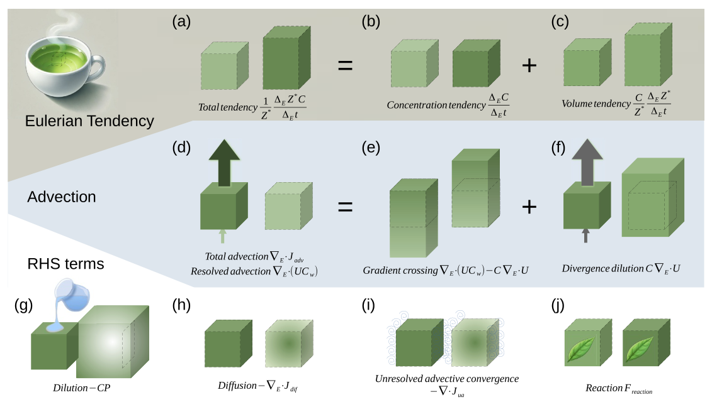
图 1。
Figure 1.
以一杯绿茶为例说明欧拉示踪物收支（方程 7、17 和 18）的示意图。
Schematic of the Eulerian tracer budget (Equations 7, 17, and 18) illustrated using a cup of green tea.
（a）欧拉总倾向分解为（b）浓度倾向和（c）体积倾向。
The (a) total Eulerian tendency is decomposed into (b) concentration tendency and (c) volume tendency.
（d）已解析平流包括（e）速度穿过示踪物梯度所产生的作用，以及（f）速度散度引起的示踪物稀释；已解析平流与总平流（同样由图 d 表示）之间的差别为（i）未解析平流。
The (d) resolved advection comprises (e) velocity crossing tracer gradients and (f) tracer dilution due to velocity divergence, which differs from the total advection (also illustrated by panel (d)) by the (i) unresolved advection.
本文用“平流”指平流通量的散度，因此正平流（负的平流辐合）会减少某一体积内的示踪物质的量。
We use “advection” to refer to the divergence of advective fluxes, which means a positive advection (negative advective convergence) decreases the amount of tracer substance within a volume.
方程 17 的右端项包括（g）稀释（例如向绿茶中加水）、（h）扩散、（i）未解析平流辐合，以及（j）反应（例如茶叶中的物质溶出）。
The RHS terms of Equation 17 include (g) dilution (e.g., adding water to green tea), (h) diffusion, (i) unresolved advective convergence, and (j) reaction (e.g., tea dissolving from tea leaves).
2. 欧拉收支的表述
2. Eulerian Budget Formulation
本节介绍有限体积模式中的欧拉示踪物质收支（见图 1），它是拉格朗日收支的基础。
In this section, we introduce the Eulerian tracer‐substance budget within finite‐volume models (see Figure 1), which serves as the foundation for the Lagrangian budget.
这里给出的方程采用离散形式，其中的格点变量定义在离散时间步的 Arakawa C 网格上。
The equations presented are formulated in discrete form, involving gridded variables defined on the Arakawa C‐grid at discrete time steps.
这些变量可以是规则时刻的瞬时值：
These variables can take the form of either snapshots at regular times:
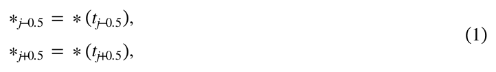
也可以是这些时间区间内的平均量：
or time‐averaged quantities over these intervals:
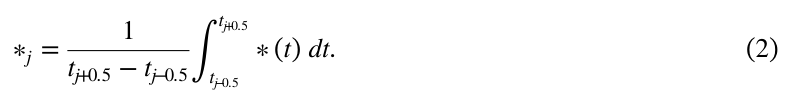
这里，∗ 表示模式中任意一个随时间变化的量，j 为时间整数索引。
Here, ∗ represents a generic time‐dependent quantity in the model, and j is the temporal integer index.
具体而言，半整数索引（例如 j − 0.5 和 j + 0.5）表示瞬时值，而整数索引（例如 j 和 j + 1）表示时间平均值。
Specifically, half‐integer indices (e.g., j − 0.5 and j + 0.5) refer to snapshots, whereas integer indices (e.g., j and j + 1) represent time averages.
tj−0.5 和 tj+0.5 分别表示获取瞬时值 ∗j−0.5 和 ∗j+0.5 的时刻，区间 [tj−0.5, tj+0.5) 则定义了 ∗j 的平均时段。
tj−0.5 and tj+0.5 mark the moments when snapshots ∗j−0.5 and ∗j+0.5 are taken, and the interval [tj−0.5,tj+0.5) defines the averaging period for ∗j.
要构建闭合收支，瞬时值和时间平均量都不可或缺。
Access to both snapshots and time‐averaged quantities is essential to construct a closed budget.
获取这些变量有时需要仔细检查模式的底层计算（Campin et al., 2004）。
Obtaining these variables sometimes requires a careful examination of the model's underlying calculations (Campin et al., 2004).
这一过程本身可能具有挑战性，但它不在本文讨论范围内。
While this process can be challenging in itself, it lies beyond the scope of this paper.
就本研究而言，我们假定表 1 上半部分列出的变量均可获得。
For the purposes of this study, we assume the variables listed in the top half of Table 1 are available.
离散化的示踪物方程描述两个相继时间步 tj−0.5 与 tj+0.5 之间的示踪物质的量变化。
A discretized tracer equation describes the change in tracer substance between two successive time steps, tj−0.5 and tj+0.5.
这种变化由区间 [tj−0.5, tj+0.5) 内发生的平流、扩散或反应引起。
This change results from advection, diffusion, or reaction that take place during the interval [tj−0.5,tj+0.5).
为方便起见，我们引入以下表示欧拉变化率的记号：
For convenience, we introduce the following notation for the Eulerian rate of change:
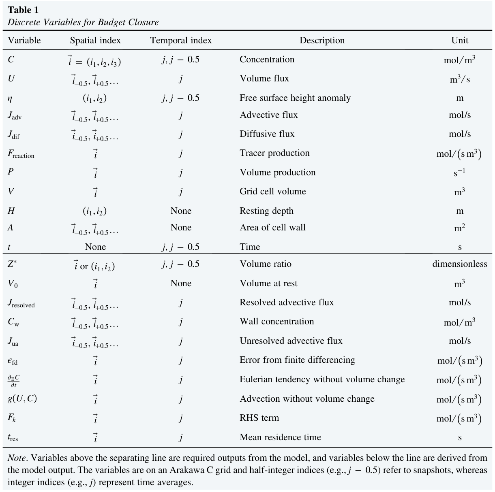
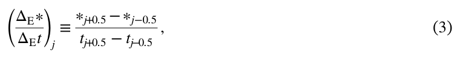
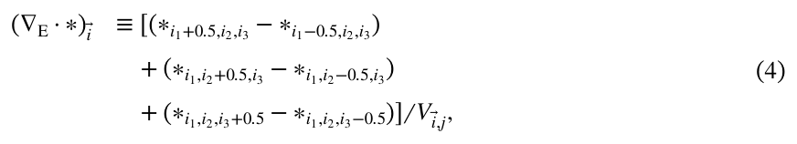
输送和通量是定义在这些交错点上的标量，其方向沿空间索引增大的方向时为正。
The transport and fluxes are scalar values defined at these staggered points and are positive when directed along increasing spatial indices.
表 1 用于收支闭合的离散变量
Table 1 Discrete Variables for Budget Closure
变量 | 空间索引 | 时间索引 | 含义 | 单位
Variable | Spatial index | Temporal index | Description | Unit
C | i⃗ = (i1, i2, i3) | j, j − 0.5 | 浓度 | mol/m3
C | i⃗ = (i₁,i₂,i₃) | j, j − 0.5 | Concentration | mol/m³
U | i⃗−0.5, i⃗+0.5… | j | 体积通量 | m3/s
U | i⃗−0.5, i⃗+0.5… | j | Volume flux | m³/s
η | (i1, i2) | j, j − 0.5 | 自由表面高度异常 | m
η | (i₁,i₂) | j, j − 0.5 | Free surface height anomaly | m
Jadv | i⃗−0.5, i⃗+0.5… | j | 平流通量 | mol/s
Jadv | i⃗−0.5, i⃗+0.5… | j | Advective flux | mol/s
Jdif | i⃗−0.5, i⃗+0.5… | j | 扩散通量 | mol/s
Jdif | i⃗−0.5, i⃗+0.5… | j | Diffusive flux | mol/s
Freaction | i⃗ | j | 示踪物生成率 | mol/(s m3)
Freaction | i⃗ | j | Tracer production | mol/(s m³)
P | i⃗ | j | 体积生成率 | s−1
P | i⃗ | j | Volume production | s⁻¹
V | i⃗ | j | 网格单元体积 | m3
V | i⃗ | j | Grid cell volume | m³
H | (i1, i2) | 无 | 静止状态下的深度 | m
H | (i₁,i₂) | None | Resting depth | m
A | i⃗−0.5, i⃗+0.5… | 无 | 网格单元边界面的面积 | m2
A | i⃗−0.5, i⃗+0.5… | None | Area of cell wall | m²
t | 无 | j, j − 0.5 | 时间 | s
t | None | j, j − 0.5 | Time | s
Z∗ | i⃗ 或 (i1, i2) | j, j − 0.5 | 体积比 | 无量纲
Z∗ | i⃗ or (i₁,i₂) | j, j − 0.5 | Volume ratio | dimensionless
V0 | i⃗ | 无 | 静止状态下的体积 | m3
V₀ | i⃗ | None | Volume at rest | m³
Jresolved | i⃗−0.5, i⃗+0.5… | j | 已解析平流通量 | mol/s
Jresolved | i⃗−0.5, i⃗+0.5… | j | Resolved advective flux | mol/s
Cw | i⃗−0.5, i⃗+0.5… | j | 边界面浓度 | mol/m3
Cw | i⃗−0.5, i⃗+0.5… | j | Wall concentration | mol/m³
Jua | i⃗−0.5, i⃗+0.5… | j | 未解析平流通量 | mol/s
Jua | i⃗−0.5, i⃗+0.5… | j | Unresolved advective flux | mol/s
ϵfd | i⃗ | j | 有限差分误差 | mol/(s m3)
ϵfd | i⃗ | j | Error from finite differencing | mol/(s m³)
∂EC/∂t | i⃗ | j | 不含体积变化的欧拉倾向 | mol/(s m3)
∂EC/∂t | i⃗ | j | Eulerian tendency without volume change | mol/(s m³)
g(U,C) | i⃗ | j | 不含体积变化的平流 | mol/(s m3)
g(U,C) | i⃗ | j | Advection without volume change | mol/(s m³)
Fk | i⃗ | j | 右端项 | mol/(s m3)
Fk | i⃗ | j | RHS term | mol/(s m³)
tres | i⃗ | j | 平均停留时间 | s
tres | i⃗ | j | Mean residence time | s
注。
Note.
分隔线上方的变量是模式所需输出，分隔线下方的变量由模式输出推导得到。
Variables above the separating line are required outputs from the model, and variables below the line are derived from the model output.
这些变量位于 Arakawa C 网格上；半整数索引（例如 j − 0.5）表示瞬时值，整数索引（例如 j）表示时间平均值。
The variables are on an Arakawa C grid and half‐integer indices (e.g., j − 0.5) refer to snapshots, whereas integer indices (e.g., j) represent time averages.
其中下标 E 表示欧拉。
where the subscript E means Eulerian.
在有限体积模式中，平流和扩散过程通过通量的散度描述。
In finite‐volume models, advective and diffusive processes are described using the divergence of fluxes.
为表述这些过程，我们引入离散散度算子：
To express these processes, we introduce the discrete divergence operator:
其中 ∗ 是网格单元边界面上的体积输送或示踪物通量（例如单位为 m3/s 或 mol/s）。
where ∗ is the volume transport or tracer flux at the cell walls (e.g., in m3/s or mol/s).
索引 i1、i2 和 i3 分别对应 x、y 和 z 方向上的空间整数索引。
The indices i1, i2, and i3 correspond to the spatial integer indices in the x‐, y‐, and z‐directions, respectively.
索引向量 i⃗ = (i1, i2, i3) 是简洁指定网格点空间位置的方式，Vi⃗,j 为网格单元随时间变化的体积（单位 m3）。
The index vector i = (i1,i2,i3) is a compact way to specify grid points spatially, and Vi⃗,j is the (time‐dependent) volume of the grid box (in m3).
半整数索引（例如 i1 − 0.5 和 i1 + 0.5）表示中心网格点两侧的交错网格点；在 Arakawa C 网格中，速度定义于这些点上。
The half‐integer indices (e.g., i1 − 0.5 and i1 + 0.5) represent the staggered grid points on either side of the central grid‐point, where velocities are defined in the Arakawa C‐grid.
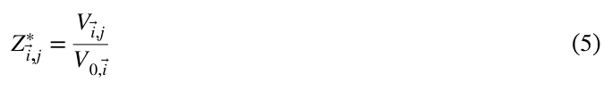
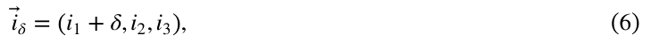
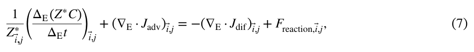
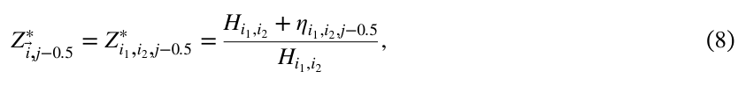
对于速度场严格无散的模式，Z∗ 恒为一，因此可以省略。
For models with strictly nondivergent velocity fields, Z∗ is always unity and can be dropped.
量 ∇E ⋅ ∗ 表示沿网格单元边界积分的净向外输送除以该网格单元体积。
The quantity ∇E ⋅∗ represents the net outward transport integrated over the boundary of the grid cell divided by the grid cell volume.
根据高斯散度定理，它等于网格单元内通量散度的体积平均值。
By the Gauss divergence theorem, it equals the volume‐averaged divergence of fluxes within the grid box.
文献中的离散散度通常基于静止状态下的体积定义（例如 Piecuch, 2017），而方程 4 使用的是随时间变化的体积。
Discrete divergence in the literature is often defined based on a volume at rest (e.g., Piecuch, 2017), as opposed to the time‐dependent volume used in Equation 4.
因此，这两种定义相差一个体积比 Z∗（无量纲）因子，其表达式为：
As a result, the two definitions differ by the volume ratio Z∗ (dimensionless), which is:
其中 V0,i⃗ 是索引为 i⃗ 的网格单元在静止状态下的体积。
where V0,i⃗ is the volume of the grid cell indexed by i⃗ at rest.
注意，方程 1–3 中 ∗ 变量的空间索引，以及方程 4 中它的时间索引，均被有意省略。
Note that the ∗variable's spatial indices in Equations 1–3, and its temporal index in Equation 4, are intentionally omitted.
这种一般化处理使时间运算可用于任意网格单元，也使空间运算可同时用于瞬时值和时间平均值。
This generalization allows the temporal operations to be applied at any grid cell and the spatial operations to be applied to both snapshots and time‐averages.
除散度外，本文开展的空间计算主要是一维的。
Aside from divergence, the spatial calculations conducted in this paper are primarily one‐dimensional.
本文通常只考虑 x 方向。
We often only consider the x‐direction in this manuscript.
为简化记号，我们采用以下约定：
To simplify notation, we introduce the following convention:
其中 δ 是 x 方向上的网格偏移量，可以为整数或半整数。
where δ is the grid offset in the x‐direction, which can be an integer or a half‐integer.
例如，紧邻网格点 i⃗ = (i1, i2, i3) 左侧的示踪物点索引为 i⃗−1 = (i1 − 1, i2, i3)，左侧的交错速度网格点则写为 i⃗−0.5 = (i1 − 0.5, i2, i3)。
For example, the index of the tracer point immediately to the left of the grid point i⃗ = (i1,i2,i3) is i⃗−1 = (i1 − 1,i2,i3), and the staggered velocity grid point to the left is written asi⃗−0.5 = (i1 − 0.5,i2,i3).
通过相应调整方程 6 中的定义，后文引入的离散空间运算可推广至 y 和 z 方向。
The discrete spatial operations introduced later can be extended to the y− and z‐directions by adjusting the definition in Equation 6 accordingly.
不失一般性，我们考虑 C，即标量示踪物质的浓度，单位为 mol/m3。
Without loss of generality, we consider C, which is the concentration of scalar tracer substance with unit of mol/m3.
该浓度定义在 Arakawa C 网格的中心点上。
This concentration is defined at the center points of the Arakawa C‐grid.
同样的推导可用于以其他单位表示、按体积定义的任意强度量。
The same derivation can be applied to any intensive quantity of volume under other units.
以质量为基准的浓度场（例如单位为 g/kg 的盐度）可以乘以海水密度，转换为以体积为基准的浓度场（例如单位体积水中的盐质量，单位为 g/m3）。
Mass‐based concentration fields (e.g., salinity with unit of g/kg) can be converted to volume‐based concentration fields by multiplying with the seawater density (e.g., mass of salt per volume of water in g/m3).
这样就避免了采用布辛涅斯克假设。
We thus avoid making the Boussinesq assumption.
使用上述记号，有限体积模式中每个网格单元的示踪物收支可写为：
Using the notation defined above, the tracer budget for every grid cell of the finite‐volume model can be written:
其中 Jadv 和 Jdif（单位 mol ⋅ s−1）分别为示踪物平流通量和扩散通量，Freaction（单位 mol ⋅ m−3 s−1）为网格单元体积平均的反应速率，例如包括化学反应或非绝热热源。
where Jadv and Jdif (in mol ⋅s−1) are the advective and diffusive tracer fluxes, Freaction (in mol ⋅m−3s−1) is the grid‐cell‐volume‐averaged reaction rate, which includes, for instance, chemical reactions or diabatic heat sources.
如果模式的收支并非严格闭合，Freaction 也可包含收支闭合残差。
If the model does not have an exactly closed budget, Freaction can also include the residual of the budget closure.
在方程左端，C（单位 mol ⋅ m−3）是网格单元平均的示踪物浓度。
On the LHS, C (in mol ⋅m−3) is the grid‐cell‐averaged tracer concentration.
方程 7 描述示踪物质的量的变化 [1/Z∗i⃗,j][ΔE(Z∗C)/ΔEt]（见图 1a），它由局地示踪物生成 Freaction（见图 1j）以及穿过体积边界的示踪物通量辐合 −∇E ⋅ (Jadv + Jdif)（见图 1d 和 1h）引起。
Equation 7 describes the change in tracer substance (1/Z∗i⃗,j)(ΔE(Z∗C)/ΔEt) (see Figure 1a) resulting from local tracer production Freaction (see Figure 1j) and the convergence of tracer fluxes across the volume boundary −∇E·(Jadv + Jdif) (see Figures 1d and 1h).
在 MITgcm 中，体积比 Z∗ 不依赖垂直索引 i3，其表达式为（Campin et al., 2004）：
In MITgcm, the volume ratio Z∗ does not depend on the vertical index i3 and is given by (Campin et al., 2004):
其中 η（单位 m）是瞬时表面高度，H（单位 m）是静止状态下的深度。
where η (in m) is the instantaneous surface height and H (in m) is the resting depth.
二维水平场使用下标索引 i1, i2，而非 i⃗。
Subscript indices i1,i2 are used for two‐dimensional horizontal fields instead ofi⃗.
H + η 是水柱总高度，与网格厚度成正比。
H + η is the total height of the column, which is proportional to the thickness of the grid.
对于采用非线性自由表面的 MITgcm 配置，Z∗ 表征体积变化引起的示踪物量变化（见图 1c），并满足（Campin et al., 2004）：
For MITgcm setups with nonlinear free surfaces, Z∗accounts for the amount of tracer change caused by volume change (see Figure 1c) and is governed by (Campin et al., 2004):
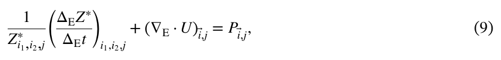
其中总体积通量 U = Um + Ub（单位均为 m3 s−1），由已解析输送 Um 和次网格尺度平流参数化产生的输送 Ub 组成。
where the total volume flux U = Um + Ub (all in m3s−1), which is made up of the resolved transport Um and the transport from the subgrid‐scale advective parameterization Ub.
P（单位 s−1）是体积生成率（例如海面的蒸发和降水）。
P (in s−1) is the volume production (e.g., evaporation and precipitation at the ocean surface).
大气和海洋有限体积模式中的网格单元体积变化可具有多种形式（例如 Griffies et al., 2020；Madec et al., 2023；Skamarock et al., 2019）。
The volume changes of grid cells in finite‐volume models for the atmosphere and ocean can take various forms (e.g., Griffies et al., 2020; Madec et al., 2023; Skamarock et al., 2019).
为每一种网格类型构建拉格朗日示踪物收支，超出了本文范围。
Formulating the Lagrangian tracer budget for each of these grid types is beyond the scope of this paper.
由于该方法目前仅在 MITgcm 中实施和检验，以下推导采用 MITgcm 的约定，即网格单元体积变化由海表面高度变化引起。
As the method has only been implemented and tested on MITgcm, the following derivation is based on the MITgcm convention, where grid cell volume changes occur as a result of sea surface height variation.
对于不适用方程 8 的模式，必须找出一个与方程 9 类似、控制体积比 Z∗ 的相应方程。
In models where Equation 8 does not apply, a corresponding equation similar to Equation 9 that governs the volume ratio Z∗ must be identified.
原则上，只要模式网格在某种坐标系中可视为准欧拉网格，仍可遵循本文步骤构建拉格朗日收支（Griffies et al., 2020）。
In principle, a Lagrangian budget can still be formulated by following the steps outlined in this paper, as long as the model grid can be treated as quasi‐Eulerian in some coordinate systems (Griffies et al., 2020).
然而，如果网格单元具有显著的穿越表面的速度（例如 MOM6；Griffies et al., 2020），方程 7 就会采用不同形式；要实现拉格朗日收支闭合，需要扩展本文的方法。
However, if the grid cells have significant dia‐surface velocity (e.g., MOM6; Griffies et al., 2020), Equation 7 takes a different form, and achieving closure of the Lagrangian budget would require an extension of this paper.
第 2.1 和 2.2 节通过变换收支的欧拉离散形式——方程 7——缩小欧拉描述与拉格朗日描述之间的差别。
By manipulating the Eulerian discrete form of the budget, Equation 7, Sections 2.1 and 2.2 narrow the gap between the Eulerian description and the Lagrangian one.
在拉格朗日描述中，平流表示为粒子在插值速度场作用下、于空间变化的示踪物场中的运动（见第 3 节）。
In the Lagrangian description, advection is represented as the movements of particles under an interpolated velocity field in a spatially varying tracer field (see Section 3).
第 2.1 节介绍如何利用时间平均的速度和浓度信息重建模式平流通量。
In Section 2.1, we introduce how to reconstruct the model advective flux with time‐averaged velocity and concentration information.
第 2.2 节将广延形式的示踪物方程变换为强度形式，使其更适合第 3 节引入的拉格朗日描述。
In Section 2.2, we manipulate the extensive tracer equation into an intensive form, making it more compatible with the Lagrangian description introduced in Section 3.
2.1. 离线平流通量的分解
2.1. Decomposition of the Offline Advective Flux
在连续情形下，示踪物平流通量是按体积定义的示踪物浓度与体积输送的乘积。
In a continuous setting, the advective tracer flux is the product of volumetric tracer concentration and volume transport.
然而，在模式中，平流通量往往是浓度和体积输送的更复杂函数，称为平流方案 𝓙adv。
In models, however, the advective flux is often a more complex function of concentration and volume transport, referred to as the advective scheme 𝓙adv.
我们可将时间平均浓度与体积输送代入平流方案：
We can plug in the time‐averaged concentration and volume transport into the advective scheme:
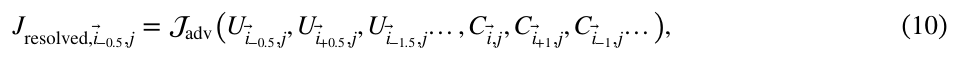
其中 Jresolved 是由 Cj 和 Uj 得到的平流通量。
where Jresolved is the advective flux derived from Cj and Uj.
在 Ui⃗−0.5,j → 0 的极限下，Jresolved,i⃗−0.5,j 线性趋于零（例如 Adcroft et al. (2004)），因此可在网格单元边界面上定义一个非零且有限的浓度：
In the limit as Ui⃗−0.5,j →0, Jresolved,i⃗−0.5,j vanishes linearly (e.g., Adcroft et al. (2004)), which allows the definition of a non‐zero, finite concentration on the grid cell wall:
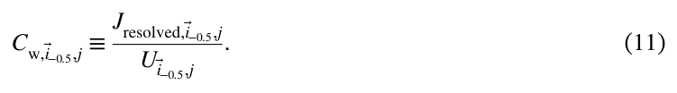
这一边界面浓度可视为将网格单元中心（例如 i⃗ 和 i⃗−1）的示踪物浓度插值到网格单元边界面（i⃗−0.5）所得。
This wall concentration can be seen as an interpolation of the tracer concentration from the grid cell centers (e.g.,i⃗ andi⃗−1) to grid cell walls (i⃗−0.5).
方程 7 中的平流通量 Jadv 通常并不等于已解析通量 Jresolved。
The advective flux Jadv in Equation 7 is generally not identical to the resolved flux Jresolved.
两者的差别在于，Jadv,j 包含底层模式计算的细节，而这些细节在生成 Cj 和 Uj 的时间平均过程中丢失了（见方程 2）。
The difference arises because Jadv,j captures details from the underlying model calculations that are lost during temporal averaging when producing Cj and Uj (see Equation 2).
这两个通量之差称为未解析平流通量：
The discrepancy between these two fluxes is referred to as the unresolved advective flux:
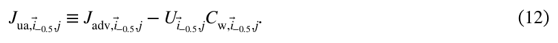
引入未解析平流通量后，方程 7 可改写为：
Using the unresolved advective flux Equation 7 can be rewritten as:
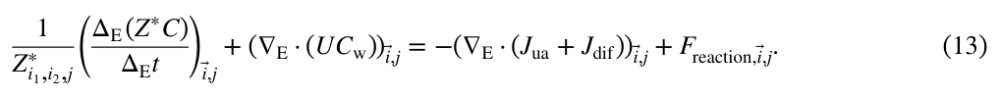
右端新增的项 −∇E ⋅ Jua 表示模式输出在时间上未解析的平流输送的散度，如图 1i 所示。
The new term on the RHS, − ∇E ⋅Jua, represents the divergence of advective transports that are not temporally resolved by the model output, as illustrated in Figure 1i.
正如第 3.1 节将展示的，引入边界面浓度 Cw 有助于建立平流的欧拉表述与拉格朗日表述之间的联系。
As we will see in Section 3.1, introducing the wall concentration Cw helps to establish a connection between the Eulerian and Lagrangian representations of advection.
2.2. 示踪物收支的强度形式
2.2. Intensive Form of Tracer Budget
对于网格单元体积可变的模式（遵循方程 8），示踪物收支中与体积相关的变化不可忽略（见 Piecuch, 2017，第 5 节）。
For models with grid cells whose volume can vary (according to Equation 8), the volume‐related changes in the tracer budget are not negligible (see Section 5 of Piecuch, 2017).
这一效应体现在方程 13 的两项中，即欧拉倾向项 (1/Z∗)(ΔE(Z∗C)/ΔEt) 和平流项 ∇E ⋅ (UCw)。
This effect is manifested in two terms in Equation 13, namely the Eulerian tendency term (1/Z∗)(ΔE(Z∗C)/ΔEt) and the advection term ∇E·(UCw).
基于第 4 节将说明的原因，我们将拉格朗日粒子定义为携带强度量、但自身不具有内禀体积的点。
For reasons explained in Section 4, we define the Lagrangian particles as points with no intrinsic volume that carry intensive quantities.
因此，需要从上述两项中去除与体积相关的部分。
Therefore, we need to remove the volume related components in those two terms.
示踪物的欧拉倾向可分解为三个部分：
The Eulerian tendency of the tracer can be decomposed into three parts,
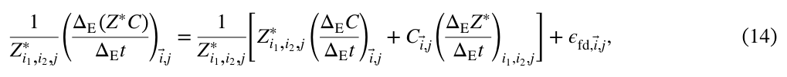
其中右端第一项是浓度倾向（图 1b），第二项是需要去除的与体积相关的部分（图 1c）。
where the first term on the RHS is the tendency of concentration (Figure 1b), and the second one is the volume‐related component (Figure 1c) to be removed.
第三项 ϵfd（单位 mol ⋅ m−3 s−1）为分解误差，其量级为 O(tj+0.5 − tj−0.5)（要得到这一结果，可利用欧拉变化率的定义，即方程 3，计算方程 14 左端，再与方程 14 右端比较）。
The third term, ϵfd (in mol ⋅m−3s−1), is the error of the decomposition, which is O(tj+0.5 − tj−0.5) (to see this result, compute the LHS of Equation 14 using the definition of the Eulerian rate of change, Equation 3, and compare to the RHS of Equation 14).
时间间隔足够短时，ϵfd 很小，因此示踪物倾向可较好地近似为：
Since ϵfd is small under short enough interval, the tracer tendency can be well approximated by:
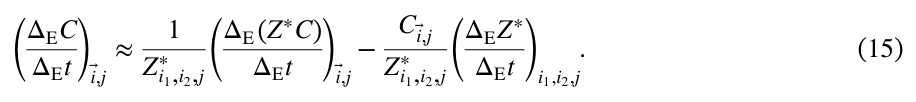
总的已解析平流 ∇E ⋅ (UCw) 包括两个部分：流体穿过浓度梯度的运动（见图 1e），以及速度散度引起的浓度稀释（见图 1f）。
The total resolved advection ∇E ⋅(UCw) consists of two components: fluid movement across concentration gradients (see Figure 1e) and the dilution of concentration resulting from velocity divergence (see Figure 1f).
后者表示为 C(∇E ⋅ U)。
The latter is represented by C(∇E ⋅U).
减去这一部分并代入方程 9，得到：
After subtracting this component and substituting Equation 9, we obtain:
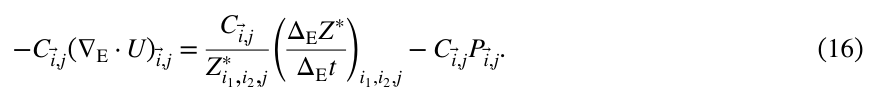
代入方程 14 和 16，可将收支方程 13 改写为：
Plugging in Equations 14 and 16, we can rewrite the budget Equation 13 as
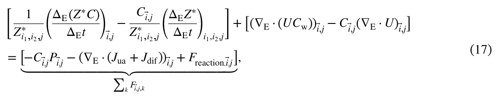
其中 Fk 为右端各项的简写，它们包含新增项 −CP（单位 mol ⋅ m−3 s−1），表示体积生成引起的示踪物稀释（见图 1g）。
where Fk is the shorthand notation for the RHS terms, which includes a new term − CP (in mol ⋅m−3s−1) representing tracer dilution resulting from volume production (see Figure 1g).
例如，当体积生成率为正时（例如降雨时），这一项会导致海洋盐度降低。
For example, this term causes a decrease in ocean salinity when there is positive volume production (e.g., when it rains).
这里假定体积生成 P 不携带任何示踪物质（如果携带，则其相应强迫包含在 Freaction 中）。
It is assumed that the volume production P does not carry any tracer substance (or, if it does, the associated forcing is included in Freaction).
注意，与体积相关的项 (C/Z∗)(ΔEZ∗/ΔEt) 同时出现在倾向项和平流项中，但二者相互抵消。
Note that the volume related term (C/Z∗)(ΔEZ∗/ΔEt) appears in both tendency and advection terms, but they cancel out.
这种抵消并不要求采用布辛涅斯克近似。
This cancellation does not require making the Boussinesq approximation.
对于涉及地球大气和海洋的大多数应用，体积比 Z∗ 接近一。
For most applications involving the Earth's atmosphere and ocean, the volume ratio Z∗ is close to one.
浓度的欧拉倾向可进一步近似为 (ΔE(Z∗C)/ΔEt) − C(ΔEZ∗/ΔEt)。
The Eulerian tendency of concentration can be further approximated by (ΔE(Z∗C)/ΔEt) − C(ΔEZ∗/ΔEt).
利用这一近似，可在方程 17 两侧同乘 Z∗，得到便于实际使用的形式：
This approximation allows us to multiply Z∗ to both sides of Equation 17 and obtain a practically convenient form:
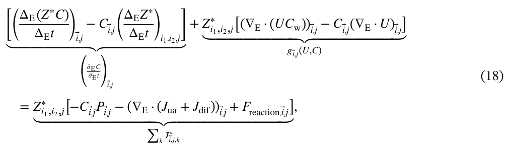
其中 ∂EC/∂Et、g(U,C) 和 ∑k𝓕k 是括号内各项的简写。
where ∂EC/∂Et, g(U,C), ∑k𝓕k are short‐hand for the terms in brackets.
这一形式很有用，因为 V 和 Z∗ 的时间依赖性相互抵消，新的平流项 g(U,C) 不再显式依赖网格单元体积。
This form of the equation is useful because the time dependencies of V and Z∗cancel out and the new advection term g(U,C) no longer explicitly depends on the grid cell volume.
这使得我们可将速度和浓度分为波动分量与平均分量，从而进一步分解平流（见第 7.2 节）。
This enables further decomposition of advection by separating the fluctuating and mean components of velocity and concentration (see Section 7.2).
方程 17 和 18 同样适用于速度场无散的模式，这只是 ∇E ⋅ U = 0 且 Z∗ = 1 时的特例。
Both Equations 17 and 18 also apply to models with divergence‐free velocity field, which is simply a special case when ∇E ⋅U = 0 and Z∗ = 1.
3. 拉格朗日收支的表述
3. Lagrangian Budget Formulation
本节提出在拉格朗日粒子上开展收支分析的理论框架。
This section provides a theoretical framework for conducting budget analysis on Lagrangian particles.
如图 2a 所示，一条粒子轨迹跨越多个时间步（蓝线和绿线），并穿过多个网格单元（黑框）。
As shown in Figure 2a, a particle trajectory spans multiple time step (shown as blue and green lines) and traverses multiple grid cells (black boxes).
拉格朗日示踪物收支涉及沿粒子轨迹对时空场进行积分（例如图 2e）。
The Lagrangian tracer budget involves integration of space‐time fields along a particle trajectory (e.g., Figure 2e).
本节的目标是将浓度、速度和示踪物方程中的各项定义为时空场（见表 2）。
The goal of this section is to define concentration, velocity, and terms in the tracer equation as space‐time fields (see Table 2).
所构建的这些场既要与第 2 节所述模式收支一致，也要保持自洽，即粒子经历的浓度变化能够准确近似右端各项的时间积分。
We construct these fields to be consistent with the model budget described in Section 2 and to be self‐consistent, meaning that the concentration changes experienced by the particles accurately approximates the time integral of the RHS terms.
关于具体技术实现，读者可参阅作者为拉格朗日收支分析开发的 Python 软件包 seaduck 及其配套文档（Jiang et al., 2023）。
For detailed technical implementation, readers are referred to the Python package seaduck and its accompanying documentation (Jiang et al., 2023), developed by the authors for Lagrangian budget analysis.
在连续示踪物场中，拉格朗日粒子上的浓度变化率为：
In a continuous tracer field, the rate of concentration change on a Lagrangian particle is given by:
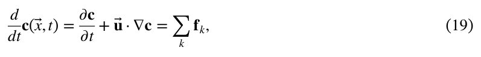
其中 𝐜 和 u⃗ 分别为连续的浓度和速度，𝐟k 表示右端的连续项，包括扩散、稀释 −𝐜 ∇ ⋅ u⃗、未解析平流辐合及反应项。
where 𝐜 and u⃗ are the continuous concentration and velocity, and 𝐟k denotes the continuous terms on the RHS, including diffusion, dilution − 𝐜 ∇ ⋅u⃗, unresolved advective convergence, and reaction terms.
下标 k 为每个右端项的索引。
The subscript k is the index for each RHS term.
方程 19 中的 𝐜、u⃗ 和 𝐟k 均在所考察粒子的时空位置 (x⃗,t) 处求值。
In Equation 19 𝐜, u⃗, and 𝐟k are evaluated at the space‐time location (x⃗,t) of the particle in question.
该方程意味着，拉格朗日粒子所经历的全部浓度变化均由右端各项解释。
The equation means that all concentration change experienced by the Lagrangian particle is explained by the RHS terms.
注意，向量以 ∗⃗ 表示，而非以粗体字母表示；本文中的粗体字母代表完全连续的场。
Note that vectors are represented by ∗⃗ rather than bold letters (which mean fully continuous fields in this paper).
模式输出是对方程 19 所描述示踪物动力学的离散近似。
The model output is a discrete approximation of the tracer dynamics described by Equation 19.
有限体积模式中的收支以时间和空间平均的形式表征连续示踪物场的底层演变，例如：
The budget in a finite‐volume model represents the underlying evolution of continuous tracer fields as temporal and spatial averages, for example,
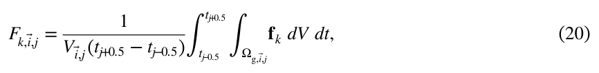
这些插值场被设计为满足与方程 19 和 20 所述约束相似的一组约束（见表 2）。
These interpolated fields are designed to satisfy a similar set of constraints as those described by Equations 19 and 20 (see Table 2).
其中 Ωg 表示网格单元，Fk 表示方程 17 的一个右端项。
where Ωg represents the grid box, and Fk represent a RHS term in Equation 17.
虽然实际中无法直接获得底层连续场（以粗体字母表示），我们仍可根据模式输出（以大写字母表示）构建插值场（以普通小写字母表示）。
Although the underlying continuous fields (denoted by bold letters) are not directly accessible in practice, we can still construct interpolated fields (denoted by regular lowercase letters) based on model outputs (denoted by uppercase letters).
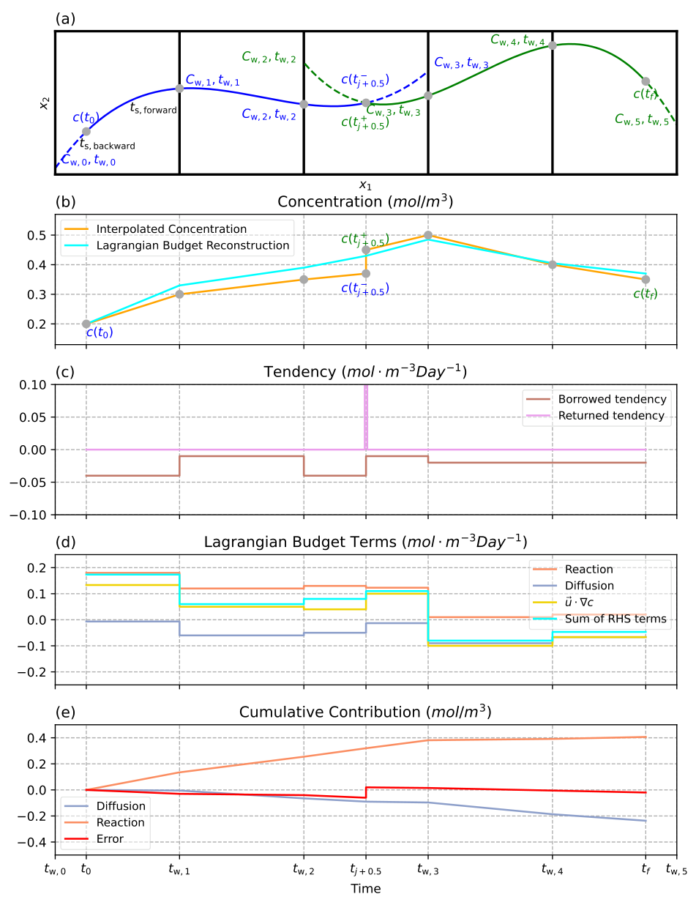
图 2。
Figure 2.
单个粒子上的拉格朗日收支示意图。
Schematic of the Lagrangian budget on a particle.
（a）粒子从时刻 t0 到 tf 的轨迹。
(a) Trajectories of the particle from time t0 to tf .
时间步 j 和 j + 1 内的轨迹分别用蓝色和绿色表示（为避免图面拥挤，省略了时间下标）。
Trajectories during time steps j and j + 1 are shown in blue and green, respectively (the temporal subscripts are omitted to avoid clutter).
虚线表示当前速度场下流线的延续。
Dashed lines represent the continuation of streamlines under the current velocity field.
假定速度的 x 分量（u1）为常数，以便与其他面板直接比较。
The x‐component of velocity (u1) is assumed to be constant to allow direct comparison with other panels.
面板（a、b）中的灰点突出显示了时间与空间的对应关系。
The relationship between time and space is highlighted by the gray dots in panels (a, b).
（b）浓度与拉格朗日重建结果（所有右端项的累积和）的时间序列。
(b) Time series of concentration and Lagrangian reconstruction (the cumulative sum of all RHS terms).
（c）借入倾向和归还倾向的时间序列。
(c) Time series of borrowed and returned tendency.
（d）右端项和平流的时间序列。
(d) Time series of RHS terms and advection.
（e）每个右端项的累积贡献及误差；该误差为借入倾向与归还倾向之差的时间积分。
(e) Cumulative contribution of each RHS term and the error, which is the time integral of the difference between borrowed and returned tendency.
下文引入的拉格朗日收支表述基于对模式输出的空间插值。
The Lagrangian budget formulation we introduce below is based on a spatial interpolation of the model output.
在时间维上，插值场为分段形式，即在一个输出时间步 [tj−0.5, tj+0.5) 内，给定位置处的浓度、速度和右端项均为常数（尽管它们在空间上连续变化）。
In the time dimension, the interpolated fields are piece‐wise, which means during an output time step [tj−0.5,tj+0.5), the concentration, velocity, and RHS terms at a given location are constant (although they vary continuously in space).
这一简化使欧拉倾向项的定义出现不一致。
This simplification introduces an inconsistency in the definition of the Eulerian tendency term.
作为平流与右端项之间的不平衡量，欧拉倾向也应随时间呈分段形式。
As the imbalance between advection and the RHS terms, the Eulerian tendency should also be piece‐wise over time.
然而，作为分段浓度的时间导数，欧拉倾向应表现为时间上狄拉克 δ 函数的和。
As the temporal derivative of a piece‐wise concentration, the Eulerian tendency should appear as the sum of Dirac delta functions in time, however.
通过在示踪物方程中引入新项 ϵet，可协调这种不一致：
This inconsistency is reconciled by a new term, ϵet, in the tracer equation:
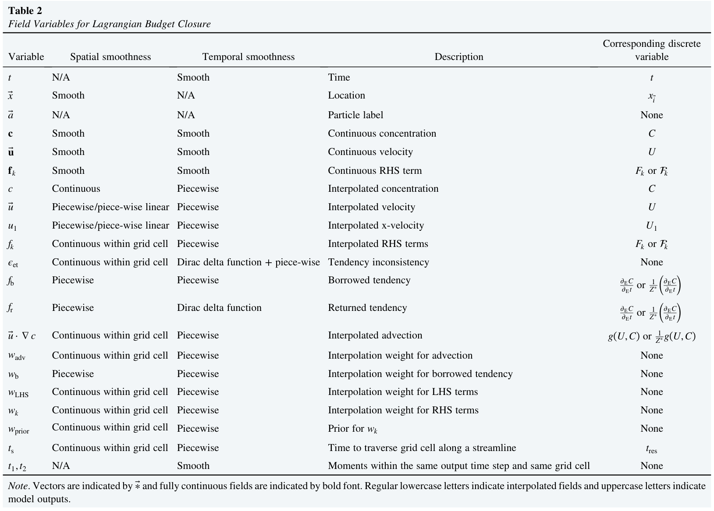
表 2 用于拉格朗日收支闭合的场变量
Table 2 Field Variables for Lagrangian Budget Closure
变量 | 空间光滑性 | 时间光滑性 | 含义 | 对应的离散变量
Variable | Spatial smoothness | Temporal smoothness | Description | Corresponding discrete variable
t | 不适用 | 光滑 | 时间 | t
t | N/A | Smooth | Time | t
x⃗ | 光滑 | 不适用 | 位置 | xi⃗
x⃗ | Smooth | N/A | Location | xi⃗
a⃗ | 不适用 | 不适用 | 粒子标签 | 无
a⃗ | N/A | N/A | Particle label | None
𝐜 | 光滑 | 光滑 | 连续浓度 | C
𝐜 | Smooth | Smooth | Continuous concentration | C
𝐮⃗ | 光滑 | 光滑 | 连续速度 | U
𝐮⃗ | Smooth | Smooth | Continuous velocity | U
𝐟k | 光滑 | 光滑 | 连续右端项 | Fk 或 𝓕k
𝐟k | Smooth | Smooth | Continuous RHS term | Fk or 𝓕k
c | 连续 | 分段 | 插值浓度 | C
c | Continuous | Piecewise | Interpolated concentration | C
u⃗ | 分段／分段线性 | 分段 | 插值速度 | U
u⃗ | Piecewise/piece‐wise linear | Piecewise | Interpolated velocity | U
u1 | 分段／分段线性 | 分段 | 插值的 x 方向速度 | U1
u₁ | Piecewise/piece‐wise linear | Piecewise | Interpolated x‐velocity | U₁
fk | 网格单元内连续 | 分段 | 插值后的右端项 | Fk 或 𝓕k
fk | Continuous within grid cell | Piecewise | Interpolated RHS terms | Fk or 𝓕k
ϵet | 网格单元内连续 | 狄拉克 δ 函数 + 分段 | 倾向的不一致性 | 无
ϵet | Continuous within grid cell | Dirac delta function + piece‐wise | Tendency inconsistency | None
fb | 分段 | 分段 | 借入倾向 | ∂EC/∂Et 或 (1/Z∗)(∂EC/∂Et)
fb | Piecewise | Piecewise | Borrowed tendency | ∂EC/∂Et or (1/Z∗)(∂EC/∂Et)
fr | 分段 | 狄拉克 δ 函数 | 归还倾向 | ∂EC/∂Et 或 (1/Z∗)(∂EC/∂Et)
fr | Piecewise | Dirac delta function | Returned tendency | ∂EC/∂Et or (1/Z∗)(∂EC/∂Et)
u⃗ ⋅ ∇c | 网格单元内连续 | 分段 | 插值平流 | g(U,C) 或 (1/Z∗)g(U,C)
u⃗·∇c | Continuous within grid cell | Piecewise | Interpolated advection | g(U,C) or (1/Z∗)g(U,C)
wadv | 网格单元内连续 | 分段 | 平流的插值权重 | 无
wadv | Continuous within grid cell | Piecewise | Interpolation weight for advection | None
wb | 分段 | 分段 | 借入倾向的插值权重 | 无
wb | Piecewise | Piecewise | Interpolation weight for borrowed tendency | None
wLHS | 网格单元内连续 | 分段 | 左端项的插值权重 | 无
wLHS | Continuous within grid cell | Piecewise | Interpolation weight for LHS terms | None
wk | 网格单元内连续 | 分段 | 右端项的插值权重 | 无
wk | Continuous within grid cell | Piecewise | Interpolation weight for RHS terms | None
wprior | 网格单元内连续 | 分段 | wk 的先验值 | 无
wprior | Continuous within grid cell | Piecewise | Prior for wk | None
ts | 网格单元内连续 | 分段 | 沿流线穿过网格单元的时间 | tres
ts | Continuous within grid cell | Piecewise | Time to traverse grid cell along a streamline | tres
t1, t2 | 不适用 | 光滑 | 同一输出时间步且同一网格单元内的时刻 | 无
t₁,t₂ | N/A | Smooth | Moments within the same output time step and same grid cell | None
注。
Note.
向量以 ∗⃗ 表示，完全连续的场以粗体字表示。
Vectors are indicated by ∗⃗ and fully continuous fields are indicated by bold font.
普通小写字母表示插值场，大写字母表示模式输出。
Regular lowercase letters indicate interpolated fields and uppercase letters indicate model outputs.
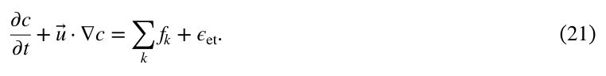
我们用普通小写字母表示插值场，以区别于第 2 节介绍的积分量或空间平均量（用大写字母表示），以及方程 19 中完全连续的场（用粗体小写字母表示）。
We use regular lowercase letters to differentiate the interpolated fields from the integrated or spatially‐averaged quantities introduced in Section 2 (in uppercase letters) and the fully continuous field in Equation 19 (in bold lowercase letters).
方程 21 中的 u⃗、c 和 fk 随时间呈分段形式（见图 2b 和 2d），而 ∂c/∂t 在每个时间步结束时（例如 tj−0.5、tj+0.5……）表现得如同狄拉克 δ 函数。
In Equation 21, u⃗, c, and fk are piece‐wise in time (see Figures 2b and 2d), whereas ∂c/∂t behaves like a Dirac delta function at the end of every time step (e.g., tj−0.5, tj+0.5…).
新项 ϵet 由两部分组成：
The new term ϵet is made up of two components:
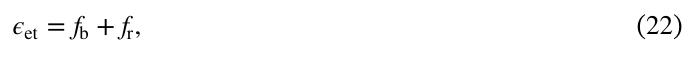
其中 fb 是人为引入、随时间呈分段形式的“借入倾向”项，fr 是在时刻 tj+0.5 表现为狄拉克 δ 函数的“归还倾向”（见图 2c）。
where fb is an artificial term called borrowed tendency that is piece‐wise in time, and fr is the returned tendency that behaves like a Dirac delta function at time tj+0.5 (see Figure 2c).
因此，在区间 [tj−0.5, tj+0.5) 内，有：
As a result, during the interval [tj−0.5,tj+0.5), we have:
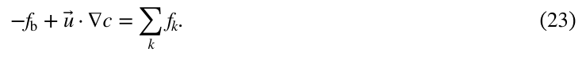
在 tj+0.5 附近的无穷小区间 [t−j+0.5, t+j+0.5] 上积分，可得
Integrating over an infinitesimal interval [t−j+0.5,t+j+0.5] around tj+0.5, we get
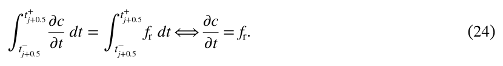
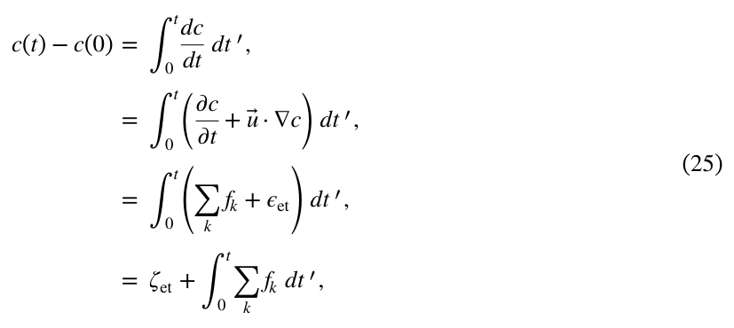
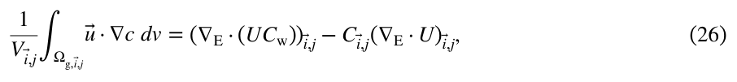
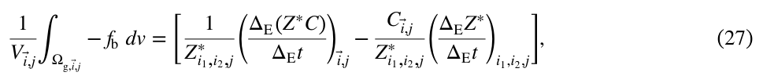
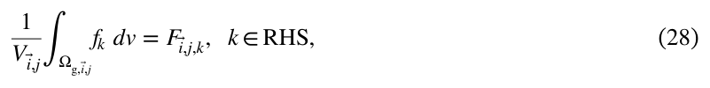
本节其余部分将定义平流（见第 3.1 节）、倾向（见第 3.2 节）和右端项（见第 3.3 节）的插值，使式 23–28 成立。
The rest of this section defines the interpolation of advection (see Section 3.1), tendency (see Section 3.2), and RHS terms (see Section 3.3) such that Equations 23– 28 hold.
借入强迫 fb 抑制了时间步 [tj−0.5, tj+0.5) 内由平流与右端项不平衡所引起的浓度变化。
The borrowed forcing fb suppresses the concentration change caused by the imbalance between advection and RHS terms during the time step [tj−0.5,tj+0.5).
在 tj+0.5 时刻，归还强迫 fr 提供浓度的突变调整（见图 2b）。
At time tj+0.5, the returned forcing fr provides the sudden concentration adjustment (see Figure 2b).
现在考虑一个粒子在时间 t 内的浓度变化：
Now, consider the concentration change over time t on a particle:
其中，浓度变化主要由右端项的贡献 ∫0t∑kfk dt′ 解释，但借入强迫与归还强迫之间存在不平衡，其定义为 ζet = ∫0tϵet dt′ = ∫0tfb dt′ + ∫0tfr dt′（单位为 mol/m3）。
where the concentration change is mostly explained by the contribution of RHS terms ∫0t ∑kfk dt′, with an imbalance between the borrowed and returned forcing, defined as ζet = ∫0tϵet dt′ = ∫0tfb dt′ + ∫0tfr dt′ (in mol/m3).
在实际应用中，该误差 ζet 很小（例如第 7 节），但如第 3.2 节所述，难以将其完全消除。
This error ζet is small in practice (e.g., Section 7), but it is challenging to completely eliminate, as discussed in Section 3.2.
为与式 17 所描述的模式收支保持一致，式 23 中的项受到以下平流空间积分方程的约束：
To maintain consistency with the model budget of Equation 17, terms in Equation 23 are constrained by a spatially integrated equation for advection:
借入强迫的方程：
an equation for borrowed forcing:
以及所有右端项的方程：
and equations for all RHS terms:
这些方程与式 20 类似。
which are analogous to Equation 20.
采用无量纲归一化形式，式 28 可改写为
In a nondimensional normalized form, Equation 28 can be rewritten as
其中，wk = fk/Fk 是描述第 k 个右端项在网格单元内部如何分布的权重函数。
where wk = fk/Fk is the weight function that describes the distribution of the kth RHS term within the grid cell.
本节将引入若干带有不同下标的权重函数 w。
We will introduce several weight functions w with different subscripts in this section.
这些权重函数在网格单元内的积分等于 1，这称为归一化条件。
The grid‐cell integration of these weight functions equals one, which is referred to as the normalization condition.
每个归一化权重函数都定义了式 17 中一个项的插值。
Each normalized weight function defines the interpolation of a term in Equation 17.
3.1. 速度与示踪物浓度的插值
3.1. Interpolation of Velocity and Tracer Concentration
拉格朗日粒子轨迹采用本节定义的插值速度场计算。
Lagrangian particle trajectories are calculated using the interpolated velocity field defined in this section.
在没有随机扩散的情况下，轨迹可用拉格朗日流映射描述：
In the absence of stochastic diffusion, the trajectories can be described by the Lagrangian flow map:
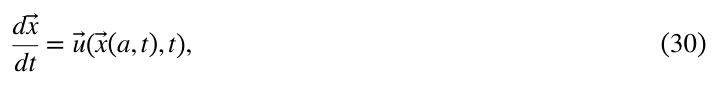
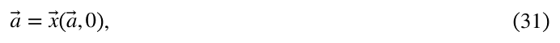
其中，a⃗ 以流体粒子的初始位置作为其标签，x⃗ = (x1, x2, x3) 是粒子在时刻 t 的空间位置向量，u⃗ = (u1, u2, u3) 是位置 x⃗ 和时刻 t 处的插值速度。
where a⃗ labels fluid particles with their initial position,x⃗ = (x1,x2,x3) is the vector of particles' spatial location at time t, and u⃗ = (u1,u2,u3) is the interpolated velocity at x⃗ and t.
按照 Vries 和 Döös（2001）介绍的方法，我们采用分段方案（有时称为分段定常方案），在时间上对速度进行插值并模拟粒子运动。
Following the approach outlined by Vries and Döös (2001), we employ a piece‐wise (sometimes called piece‐wise‐stationary) scheme to interpolate velocity in time and simulate particle movements.
这里使用时间索引 j 对应的时间平均体积输运。
The time‐averaged volume transport under temporal index j is used.
在每个网格单元内部，用于轨迹模拟的各速度分量，均由定义在网格单元壁面上的体积输运沿相应方向进行空间线性插值得到。
Within each grid cell's interior, each component of the velocity used for trajectory simulation is a result of linear spatial interpolation along its direction using the volume transport defined on the cell walls.
在每个输出时间步 [tj−0.5, tj+0.5) 内，速度的 x 分量仅是 x 的函数。
During every output time step [tj−0.5,tj+0.5), the x‐component of the velocity is only a function of x.
在垂直于 x 方向的壁面（左壁面和右壁面）上，x 方向速度 u1 为壁面平均速度：
On the walls perpendicular to the x‐direction (left and right), the x‐velocity u1 is the average velocity on the wall:
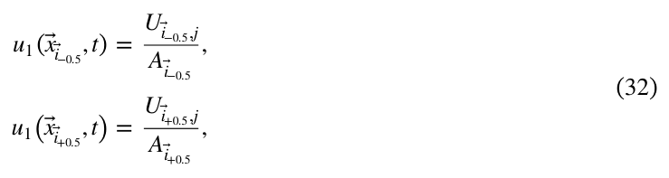
其中 tj−0.5 < t < tj+0.5，Ai⃗−0.5 和 Ai⃗+0.5 是对应单元壁面的面积（单位为 m2），x⃗i⃗−0.5 和 x⃗i⃗−0.5 是这些壁面上的任意位置，而 x1 和 u1 分别表示位置向量和速度向量的 x 分量。
for tj−0.5 < t < tj+0.5, where Ai⃗−0.5 and Ai⃗+0.5 are the areas of the corresponding cell walls (in m2), x⃗i⃗−0.5 and x⃗i⃗−0.5 are arbitrary locations on those walls, and x1 and u1 represent the x‐component of the location and velocity vector, respectively.
如表 1 中所假定的，通常可以忽略由网格单元几何形状变化引起的壁面面积 A 的时间依赖性。
The time dependence of wall area A due to changes in grid cell geometry can often be neglected, as assumed in Table 1.
在网格单元内部，u 速度可用线性插值表示为（Vries & Döös, 2001）：
In the interior of a grid cell, the u velocity can be expressed using linear interpolation as (Vries & Döös, 2001):
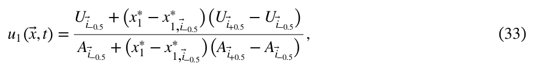
其中，x∗1 = x/(x1,i⃗+0.5 − x1,i⃗−0.5) 是以网格单元尺度无量纲化的单元内 x 坐标。
where x∗1 = x/(x1,i⃗+0.5 − x1,i⃗−0.5) is the x‐coordinate in a grid cell, non‐dimensionalized by the grid cell size.
当壁面面积之间的差异相对较小时，u 速度可很好地近似为：
When the difference between wall areas is relatively small, the u velocity is well approximated by:
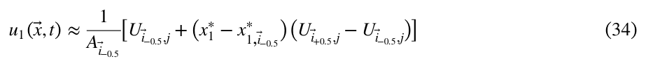
其中 tj−0.5 < t < tj−0.5。
for tj−0.5 < t < tj−0.5.
其他两个空间方向的速度也采用类似方式表示。
The velocities in the other two spatial directions are expressed in a similar way.
在这种插值下，速度散度在一个网格盒内是均匀的。
Under this interpolation, the velocity divergence is uniform in a grid box.
当模式的体积输运无散时，可以证明，由这种方式插值得到的速度所平流输送的流体微团保持体积不变（Döös et al., 2017; Vries & Döös, 2001）。
When the model volume transport is divergence‐free, it can be shown that water parcels advected by a velocity interpolated in this manner preserve their volume (Döös et al., 2017; Vries & Döös, 2001).
在地球海洋和大气中，由散度定义的时间尺度往往远长于体积输运的特征时间尺度（例如在一个网格盒内的平均停留时间）。
In Earth's oceans and atmosphere, the time scale defined by the divergence tends to be very long compared to the characteristic volume transport time scale (e.g., the mean residence time in a grid box).
因此，假设流体微团体积守恒是合理的（见附录 A）。
Therefore, it is a valid assumption that water parcels conserve volume (see Appendix A).
我们利用第 2 节定义的壁面浓度来定义示踪物浓度。
We define the tracer concentration using the wall concentration defined in Section 2.
在每个网格单元壁面上，浓度等于壁面浓度，即
On each grid cell wall, the concentration equals the wall concentration, that is,
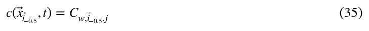
其中 tj−0.5 ≤ t < tj+0.5。
for tj−0.5 ≤ t < tj+0.5.
关键在于，这保证了粒子在网格单元之间移动时不会发生浓度突变，因为共用同一壁面的相邻网格单元，也共用定义在该壁面上的壁面浓度（见图 2a 和 2b）。
Crucially, this ensures that there is no sudden concentration change when moving between grid cells, as adjacent grid cells that share a grid cell wall also share the wall concentration defined on that wall (see Figures 2a and 2b).
在网格单元内部、一个时间步 [tj−0.5, tj+0.5) 之内，粒子经历的平流散度不随时间变化（见图 2d）。
In the interior of a grid cell and within a time step [tj−0.5,tj+0.5), a particle experiences an advective divergence that is constant‐in‐time (see Figure 2d).
这意味着浓度插值是沿流线定义的时间线性插值（见图 2b）。
This means the interpolation of concentration is a linear interpolation in time, defined along streamlines (see Figure 2b).
例如，在图 2a 中，初始盐度异常 c(t0) 为
In Figure 2a, for example, the initial salinity anomaly c(t0) is given by
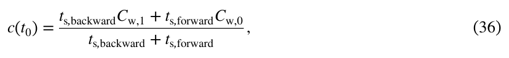
其中，ts,backward 和 ts,forward 分别表示粒子沿流线反向或正向运动、到达网格单元壁面所需的时间，Cw,0 和 Cw,1 是相应的壁面浓度（见图 2a）。
where ts,backward and ts,forward represent the times a particle needs to travel backward or forward along a streamline before reaching a grid cell wall, and Cw,0 and Cw,1 are the appropriate wall concentrations (see Figure 2a).
由于浓度在时间上是分段的，同一输出时间步内不同粒子位置之间的浓度变化由平流 u⃗·∇c 驱动。
As the concentration is piece‐wise in time, the concentration change between different particle locations within the same output step is driven by advection u⃗ ⋅ ∇c.
我们假设平流沿流线保持恒定，这意味着沿一条流线的平流为：
We assume that the advection is constant along streamlines, which implies that the advection along a streamline is given by:
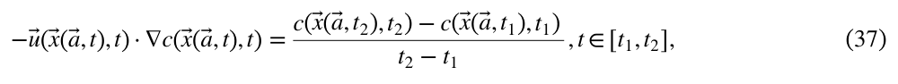
其中，a⃗ 是任意粒子标签，t1 和 t2 是同一输出时间步内的两个不同时刻，并且 x(a⃗,t1) 和 x(a⃗,t2) 位于同一网格单元内。
where a⃗ is an arbitrary particle label, and t1 and t2 are different times within the same output time step, such that x(a⃗,t1) and x(a⃗,t2) are within the same grid cell.
由高斯散度定理可得
The Gauss divergence theorem gives
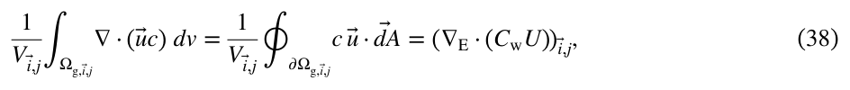
其中，∂Ωg 表示网格单元的边界。
where ∂Ωg indicates a grid cell's boundary.
在我们的速度插值方案（式 33）下，散度在每个网格单元内是空间常数，且 ∇·u⃗ = ∇E·U。
Under our velocity interpolation scheme (Equation 33), the divergence is a spatial constant in each grid cell, and ∇·u⃗ = ∇E·U.
于是，可计算 u⃗·∇c 的体积积分为：
We can then calculate the volume integral of u⃗ ⋅ ∇c as:
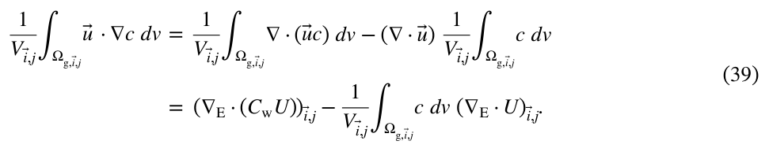
附录 B 讨论了如何计算 (1/V)∫Ωgc dv。
In Appendix B, we discuss how to calculate (1/V)∫Ωgc dv.
对于大多数示踪物，包括第 7 节所讨论的示踪物，该积分可以用 Ci⃗ 近似。
For most tracers, including the ones discussed in Section 7, the integral can be approximated by Ci⃗.
因此，式 39 可写为：
Therefore, Equation 39 can be written as:
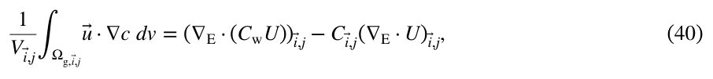
这与式 26 相同。
which is the same as Equation 26.
为方便起见，可以将其表示为无量纲归一化形式：
For convenience, we can express it in a non‐dimensional normalized form:
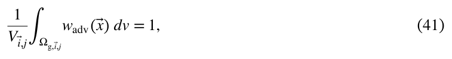
其中，
where
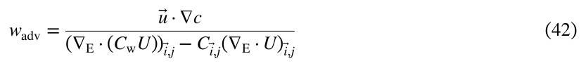
为平流的权重函数。
is the weight function for advection.
在分母恒等于零的特殊情况下，该无量纲形式不再有定义。
In the special case where the denominator is identically zero, the non‐dimensional form becomes undefined.
此时，插值方案的行为由分母趋近于零时的极限定义。
In this case, the behavior of the interpolation scheme is defined by the limit of the denominator approaching zero.
需要注意，当示踪物变化的时间尺度也很长时，即使速度散度很小（正或负），对某些示踪物仍可能很重要。
Note that a small velocity divergence (positive or negative) can still be important for some tracers when the time scale for tracer change is also long.
例如，海洋盐度通常约为 35 psu。
For example, salinity in the ocean are usually around 35 psu.
然而，对于北极淡化（Shu et al., 2018）等大尺度问题，盐度变化率很少超过 0.15 psu/十年，因此其特征时间尺度可长达数百年至数千年。
However, the rate of salinity change, for large scale problems, such as Arctic freshening (Shu et al., 2018), is rarely over 0.15 psu/ decade, resulting in a characteristic time scale of many centuries to millennia.
对于这类示踪物，体积效应（例如盐度的淡水强迫）可能是一阶量级的效应。
For such tracers, volume effects (e.g., freshwater forcing for salinity) can be of the first order.
3.2. 倾向的插值
3.2. Interpolation of Tendency
式 27 要求，在网格单元体积上积分的借入倾向与式 17 中的欧拉倾向一致，等价地可写为：
Equation 27 requires that the grid‐cell‐volume integrated borrowed tendency matches the Eulerian tendency from Equation 17, or, equivalently:
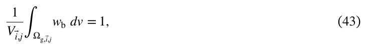
其中，
where
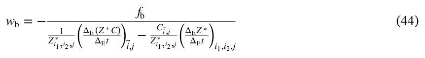
为借入强迫的权重函数。
is the weight function for the borrowed forcing.
本研究采用最简单的假设，即网格单元内借入强迫项的权重函数在空间上均匀：
In this study, we make the simplest assumption that the weight function for the borrowed forcing term in a grid cell is spatially uniform:
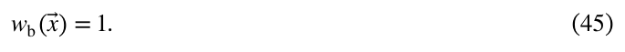
很容易看出，它满足式 43 的归一化条件。
It can be readily seen that this satisfies the normalization condition of Equation 43.
我们采用这种简单插值，是因为无论如何定义 fb，借入强迫 −fb 与归还强迫 fr = ∂c/∂t 在时间积分意义下总存在不匹配，这就是式 25 中引入的误差项：
We use this simple interpolation because, regardless of how fb is defined, there is always a mismatch between the borrowed forcing −fb and the returned forcing fr = ∂c/∂t in the time‐integrated sense, which is the error term introduced in Equation 25:
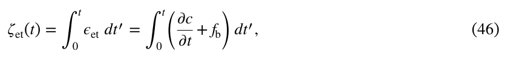
要理解为何难以消除这一误差，需要考察这两个项分别基于哪些可用数据。
To see that this error is difficult to eliminate, we need to examine what available data the two terms are based on.
fb 受到 ∂EC/∂Et 的约束（见式 27），而后者基于浓度快照 Cj−0.5（见式 3 和 17）。
fb is constrained by ∂EC/∂Et (see Equation 27), which is based on concentration snapshots Cj−0.5 (see Equations 3 and 17).
然而，∂c/∂t 取决于插值浓度，因此也取决于壁面浓度 Cw,j（见式 35）。
However, ∂c/∂t depends on interpolated concentration and therefore the wall concentration Cw,j (see Equation 35).
归根结底，它由时间平均浓度 Cj 导出（见式 10 和 11）。
Ultimately, it is derived from the time averaged concentration Cj (see Equations 10 and 11).
当时间步较短时，快照 Cj−0.5 与平均值 Cj 在数值上接近，但通常无法由其中一个直接计算另一个（见式 1 和 2）。
The snapshots Cj−0.5 and averages Cj are similar in value when time steps are short, but generally there is no way to directly calculate one from the other (see Equations 1 and 2).
因此，很难将式 46 定义的误差降至零。
As a result, it is very difficult to reduce the error defined in Equation 46 to zero.
如第 7 节所示，即便采用这一简单假设，案例研究中的总误差（见第 6 节）仍然很小，其中也包括式 46 定义的误差。
As we will see in Section 7, the total error (see Section 6), which includes the error defined in Equation 46, is small in the case studies even under this simple assumption.
3.3. 右端项的插值
3.3. Interpolation of Right‐Hand‐Side Terms
在前面的第 3.1 和 3.2 节中，我们明确了如何对左端项——平流项和倾向项——进行插值。
In the previous Sections 3.1 and 3.2, we specified how the LHS terms—the advection term and the tendency term —are interpolated.
本小节讨论右端项，包括扩散、未解析的平流辐合以及反应项。
This subsection concerns the RHS terms, including diffusion, unresolved advective convergence, and reaction terms.
欧拉平均示踪物收支（例如式 17）可简化为：
The Eulerian averaged tracer budget (e.g., Equation 17) can be simplified to:
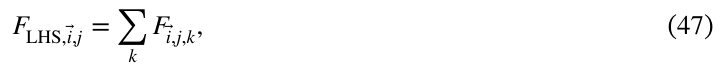
其中，FLHS,i⃗,j 是所有左端项之和。
where FLHS,i⃗,j is the sum of all LHS terms.
也可以将式 23 的拉格朗日收支闭合关系改写为
We can also write the Lagrangian budget closure of Equation 23 in an alternative form as
其中，wLHS = (−fb + u·∇c)/FLHS,i⃗,j 是左端项的空间分布函数，也就是 wb 和 wadv 的加权平均；wk 是右端项的权重，须满足式 29 的归一化条件。
where wLHS = (− fb + u ⋅ ∇c)/FLHS,i⃗,j is the spatial distribution function of the LHS terms or a weighted average of wb and wadv, and wk is the weight of the RHS terms that needs to satisfy the normalization condition of Equation 29.
将式 48 在网格单元体积上平均，得到：
Averaging Equation 48 over a grid cell volume yields:
由于平流项和倾向项都满足归一化条件（见式 41 和 43），其联合分布也满足归一化条件：
Since both the advection term and the tendency term (see Equations 41 and 43) satisfy the normalization condition, their joint distribution also satisfies the normalization condition:
因此，式 49 简化为式 47。
Therefore, Equation 49 reduces to Equation 47.
可以看出，只要式 47 和 50 成立，就能够构造同时满足式 29 和 48 的权重函数 wk。
We can see that it is possible to construct a weight function wk that satisfies both Equations 29 and 48, provided that Equations 47 and 50 hold.
本研究找到了一族同时满足这两个条件的方程：
In this study, we find a family of equations that satisfy both conditions:
其中，wprior 是满足类似式 29 归一化条件的先验权重函数。
where wprior is a prior weight function that satisfies a similar normalization condition as Equation 29.
很容易验证，这一定义同时满足式 29 和 48。
It is easy to check that this definition satisfies both Equations 29 and 48.
由此得到的沿粒子轨迹的右端项时间序列示于图 2d。
The resulting time series of RHS terms along particle trajectories are illustrated in Figure 2d.
先验权重函数 wprior 的选择基于网格单元内部的示踪物分布。
The choice of the prior weight function wprior is based on the tracer distribution within the grid cell.
在我们的插值方案中，每个单元壁面上的浓度是均匀的。
In our interpolation scheme, the concentration on each cell wall is uniform.
因此，通过同一对壁面进入和离开网格单元的粒子，无论其具体轨迹如何，都会经历相同的示踪物变化。
Thus, particles entering and leaving a grid cell through the same pair of walls experience the same tracer change regardless of their specific trajectories.
例如，一个粒子可能在单元内部停留较长时间，另一个粒子则可能在靠近某条棱的位置迅速穿过单元（即在两个单元壁面的交线附近）。
For example, one particle might spend a relatively long time in the interior of the cell, whereas another might quickly cross the cell near one of the edges (i.e., at the intersection of two cell walls).
一个极端情形是粒子掠过网格单元的一条棱，此处局地示踪物梯度存在奇异性，因为具有不同浓度的壁面在棱处相交。
An extreme case is when a particle skims the grid cell at one of its edges, where the local tracer gradient is singular because different walls with different concentration connect at the edges.
因此，由平流引起的浓度变化在网格单元的棱处也像狄拉克 δ 函数一样发散。
As a result, the advective concentration change also diverges like a Dirac delta function at grid cell edges.
沿轨迹在时间上积分后，这一奇异性对应于有限的浓度变化。
After integrating in time along the trajectories, this singularity is associated with a finite change in concentration.
我们使用的先验权重函数考虑了粒子通过时间的差异以及棱处奇异性的存在：
The prior weight function we use accounts for the difference in particle transit times and the presence of the singularity at the edges:
其中，ts(x⃗) 是沿 x⃗ 所在流线穿过网格单元所需的时间，tres 是该单元的平均停留时间，定义为
where ts(x⃗) is the time to traverse the grid cell along the streamline that x⃗ is located on, and tres is the mean residence time of the cell, given by
容易证明，沿一条流线对 wprior 作时间积分，其结果与 ts 无关。
It is readily shown that the temporal integration of wprior along a streamline is independent of ts.
这对应于以下事实：粒子穿过一个网格单元所需的时间，不影响它所经历的浓度变化。
This corresponds to the fact that the time taken for a particle to traverse a grid cell does not influence the concentration change the particle experiences.
附录 B 表明，wprior 也满足归一化条件。
Appendix B shows that wprior also meets the normalization criterion.
式 42、45 和 51 定义了式 17 中各项的插值，并满足式 23 和 26–28。
Equations 42, 45, and 51 define the interpolation of each term in Equation 17 that satisfies Equations 23 and 26– 28.
沿流线对右端项作时间积分，可以解释粒子所感受到的示踪物浓度变化，如图 2b 和 2e 所示。
Temporal integration of the RHS terms along streamlines explains the tracer concentration change felt by the particles, as illustrated in Figures 2b and 2e.
至此，拉格朗日收支的构建完成。
This completes the Lagrangian budget construction.
在实际应用中，评估各项在一段时间内的贡献，往往比评估其瞬时值更有用。
In practice, it is often more useful to evaluate the contribution of each term over a period of time rather than their instantaneous values.
由于右端项不会在粒子穿越网格单元壁面时或模式时间步结束时改变粒子浓度，因此，不失一般性，可以考虑在同一输出时间步内、粒子始终处于同一网格单元时，各右端项对该粒子的贡献。
Since the RHS terms do not change the particle's concentration during grid‐cell‐wall crossing or at the end of model time steps, we can, without loss of generality, consider the contribution of RHS terms on a particle within the same output time step and while the particle remains in the same grid cell.
将式 48 在式 37 定义的时间区间 [t1, t2] 上积分，得到：
Integrating Equation 48 over the time interval [t1,t2] defined in Equation 37 yields:
其中，Δc 是右端项引起的总浓度变化，可用第 3.1 和 3.2 节介绍的插值方案计算。
where Δc is the total change in concentration caused by the RHS terms, which can be calculated using the interpolation schemes described in Sections 3.1 and 3.2.
定义有效时间 tk 为
We define an effective time tk by,
于是，式 54 简化为：
Equation 54 is then simplified to:
可以证明，若预先指定 Δc，并假设有效时间 tk 独立同分布于正态分布 N(((t2 − t1)/ts)tres, σ2(((t2 − t1)/ts)tres)2)，则每个 tk 的最大似然估计（MLE，Wunsch, 2006）等于式 51 和 52 定义的 wk 在 [t1, t2] 上的积分。
It can be shown that if we prescribe Δc and assume the effective times tk follow identical independent normal distributions N(((t2 − t1)/ts)tres, σ2(((t2 − t1)/ts)tres)2), the maximum likelihood estimate (MLE, Wunsch, 2006) of each tk is equal to the integration of wk defined in Equations 51 and 52 over [t1,t2].
无量纲参数 σ 在估计过程中相消，可以取任意非零值。
The non‐dimensional parameter σ cancels out during the estimation process and can take any non‐zero value.
如果假定权重函数 wk 沿流线均匀，则插值方法（式 51）与这一方法（称为状态估计）等价。
Assuming the weight function wk is uniform along streamlines, the interpolation approach (Equation 51) and this approach (referred to as the state estimate) are equivalent.
附录 C 给出了这种等价性的证明。
A proof of this equivalency is provided in Appendix C.
第 7 节的案例研究采用这一状态估计方法实现（Jiang et al., 2023）。
The case studies in Section 7 are implemented using this state estimate approach (Jiang et al., 2023).
4. 拉格朗日收支的积分形式
4. Integral Form of Lagrangian Budget
在大气与海洋研究中，关注的对象通常是广延量（例如全球大气热含量）或空间平均量（例如全球平均地表温度），而非特定位置的强度量（例如单个气块的温度）。
In atmospheric and oceanic studies, the focus often lies on extensive quantities (e.g., global atmospheric heat content) or spatially averaged quantities (e.g., mean global surface temperature), rather than on intensive quantities at specific locations (e.g., the temperature of an individual air parcel).
到目前为止，我们已以与模式收支一致的方式闭合了拉格朗日示踪物收支。
Thus far, we have closed the Lagrangian tracer budget in a consistent manner with the model budget.
然而，式 23 中实现的闭合采用微分形式，这意味着它控制的是每个粒子浓度的变化（强度量），而非一个体积内示踪物变化的总量（广延量）。
However, the closure we achieved in Equation 23 is in a differential form, meaning it governs the change in concentration of each particle (intensive) rather than the total amount of tracer change in a volume (extensive).
本节通过用有限求和来估计积分，将粒子上定义的强度量与所关注的广延量联系起来。
In this section, we establish the connection between the intensive quantities defined on particles and the extensive quantities of interest by the process of estimating an integral with a finite sum.
可以证明，在第 3.1 节定义的速度插值方案下，式 30 定义的拉格朗日流映射是标签 a⃗ 的绝对连续函数（见附录 D）。
The Lagrangian flow map defined in Equation 30 and under the velocity interpolation scheme defined in Section 3.1 can be shown to be an absolute continuous function of label a⃗ (see Appendix D).
具体而言，流映射对 a⃗ 的一阶导数有界且分段连续。
Specifically, the flow map's first derivative of a⃗ is bounded and piece‐wise continuous.
考虑一个将连续空间域 Ω(0) 变换为另一连续空间域 Ω(t) 的流映射，其中 t 可以为正，也可以为负。
Consider a flow map that transforms a continuous spatial domain Ω(0) to another continuous domain Ω(t), where t can be either positive or negative.
对每个 a⃗ ∈ Ω(0)，都存在对应的 x(a⃗,t) ∈ Ω(t)。
For every a⃗ ∈ Ω(0), there is a corresponding x(a⃗,t) ∈ Ω(t).
量 β 在被平流输送的区域的一个子集（或全集）ω(t) ⊆ Ω(t) 上的积分 Iω 可表示为：
The integral Iω of a quantity β over a subset (or the entire set) of the advected domain ω(t) ⊆Ω(t) can be expressed as:
这里，x⃗ 是标签为 a⃗ 的流体微团在时刻 t 的位置，dvx⃗ 是区域 Ω(t) 中的体积元，而 β 可以表示示踪物浓度，也可以表示某个右端项 fk 在时间段 [t, t + Δt0] 内引起的浓度变化，例如
Here,x⃗ is the location of the fluid parcel labeled a⃗ at time t, dvx⃗ is the volume element in domain Ω(t), and β can represent the tracer concentration or the concentration change due to a RHS term fk over a time period [t,t + Δt0], for example,
其中，x⃗ 和 t 现在表示积分时段开始时的位置和时间。
where x⃗ and t now represent the location and time at the beginning of the integration period.
Iω(t) 的例子包括某一水团的总磷含量（见第 7.1 节），以及一列网格单元对海洋热浪的贡献（见第 7.2 节）。
Examples of Iω(t) include the total phosphorus content of a water mass (see Section 7.1) and the contribution of a column of grid cells to a marine heat wave (see Section 7.2).
由于流映射可微，可以将对 x⃗ 的积分转换为对 a⃗ 的积分。
Since the flow map is differentiable, we can convert the integration over x⃗ to one that is over a⃗.
这一操作类似于坐标变换。
This operation is similar to a coordinate transform.
积分 Iω 可改写为：
The integral Iω can be rewritten as:
其中，ω(0) ⊆ Ω(0) 是映射到 ω(t) 的集合，dva⃗ 是区域 Ω(0) 内的体积元，|dxm/dan| 是流映射的雅可比矩阵行列式。
where ω(0) ⊆ Ω(0) is a set that maps to ω(t), dva⃗ is the volume element in domain Ω(0), and |dxm/dan| is the determinant of the flow map's Jacobian matrix.
本文大部分内容，包括第 7 节的案例研究，都假定该行列式等于 1。
The determinant is assumed to be unity for most of this paper, including the case studies in Section 7.
这一近似是合理的，因为速度散度通常很小（见附录 A）。
This approximation is justified because the velocity divergence is typically small (See Appendix A).
在我们的插值方案下，由于流映射具有光滑性，式 59 中的被积函数始终黎曼可积，因此可以将其改写为对粒子的无穷求和：
Under our interpolation scheme, and thanks to the smoothness of the flow map, the integrand in Equation 59 is always Riemann integrable, and therefore, it can be rewritten as an infinite sum over particles:
其中，下标 l 标记 N 个粒子中的每一个，al 为粒子的初始位置，均匀分布于 Ω(0) 内；Vp = V(Ω(0))/N 是每个粒子的有效体积，用于替代式 59 中的体积元 dva⃗。
where the subscript l indexes each of the N particles, al is the particle initial position, uniformly distributed in Ω(0), and Vp = V(Ω(0))/N is the effective volume of each particle, replacing the volume element dva⃗ in Equation 59.
Iω(t) 的值可以通过有限求和进行数值估计。
The value of Iω(t) can be estimated numerically by a finite sum.
当粒子数足够多时，有限和将收敛于该积分，从而提供准确估计。
With a sufficient number of particles, the finite sum will converge to the integral, providing an accurate estimate.
可以利用粒子统计得到的抽样误差来衡量这种收敛。
The convergence can be measured by the sampling error using particle statistics.
有效体积 Vp 通常被解释为以粒子为中心的一个小流体体积，或一段流管（例如 Berglund et al., 2017, 2023; Fox et al., 2022; Tooth et al., 2023; van Sebille et al., 2018）。
The effective volume Vp is commonly interpreted as a small fluid volume or section of a stream tube centered around the particle (e.g., Berglund et al., 2017, 2023; Fox et al., 2022; Tooth et al., 2023; van Sebille et al., 2018).
其隐含假设是，起点与该粒子足够接近的流体微团，将沿相似轨迹运动并经历相似的动力过程。
The implicit assumption is that the fluid parcels that start sufficiently close to the particle will follow similar trajectories and experience similar dynamics.
然而，地球物理流体中的弥散和混合非常有效，微团之间很小的位移也可能呈指数增长（Prants, 2014）。
However, geophysical flows are very effective in dispersion and mixing, meaning a small displacement between parcels can exponentially grow (Prants, 2014).
这称为拉格朗日混沌。
This is called Lagrangian chaos.
如果模拟持续时间较长，或者示踪物动力过程具有很强的空间变异性，上述假设就不再成立。
If the simulation is long or if there is large spatial variability in the tracer dynamics, the assumption mentioned above breaks down.
在我们的框架中，我们避开了这一假设，每个粒子自身并不携带显式体积或任何广延量。
In our framework, we avoid this assumption and each particle does not carry an explicit volume or any extensive quantities individually.
4.1. 协调粒子体积与输运的解释
4.1. Reconciling Particle Volume and Transport
海洋学中估计体积通量连通性的一种常用方法（Berglund et al., 2022; Bower et al., 2019; Burkholder & Lozier, 2011; Doos, 1995; Tooth et al., 2023），是在源区持续投放粒子，源区通常是一个垂直断面。
A common method for estimating connectivity of volume fluxes in oceanography (Berglund et al., 2022; Bower et al., 2019; Burkholder & Lozier, 2011; Doos, 1995; Tooth et al., 2023) involves the continuous deployment of particles at a source, typically a vertical section.
这些研究往往为拉格朗日粒子赋予一个体积输运量（例如以 Sverdrup，即 106 m3/s 为单位）。
Lagrangian particles in these studies are often assigned a volume transport (e.g., in Sverdrups or 106 m3/s).
当粒子到达某些目的地时，将它们所对应的体积通量求和，以推断源区与目的地之间的体积连通性。
When the particles reach certain destinations, their associated volume fluxes are summed to infer the volume connectivity between the source and the destinations.
这不同于式 60 所描述的为每个粒子赋予有效体积（例如以 m3 为单位）。
This is different from assigning an effective volume to each particle (e.g., in m3) as described by Equation 60.
本小节讨论这两种方法表面上的差异，并证明它们相互一致。
This subsection addresses the apparent discrepancy between these two approaches and demonstrates that they are mutually consistent.
因此，如果采用体积通量的解释，就可以利用拉格朗日收支来确定示踪物的连通性。
The Lagrangian budget can, therefore, be used to determine tracer connectivity if the volume‐flux interpretation is applied.
尽管不同研究中连续释放粒子的细节有所不同，但不失一般性，我们考虑在时间段 [0, tr] 内，以固定间隔 Δtr 在垂直断面 Ωs 释放粒子。
Although the details of continuous particle release vary among studies, without loss of generality, we consider the release of particles at a vertical section Ωs over a period of time [0,tr] at fixed intervals Δtr.
在法向速度更大的位置，以更小的间距释放粒子，以保证每个粒子具有相同的输运量 τp。
Particles are released with finer spacing where the orthogonal velocity is larger, ensuring that each particle has the same transport τp.
当所有粒子都到达预先指定的目的地垂直断面之一时，模拟停止。
The simulation stops when all particles reach one of the predetermined destination vertical sections.
在各目的地停止的粒子数量（例如 nA, nB, …）指示从源区到各目的地的体积输运量（例如 nAτp, nBτp, …）。
The number of particles that stops at each destination (e.g., nA,nB,… ) indicates the volume transport from the source to the destinations (e.g., nAτp,nBτp,… ).
考虑这一试验所代表的水体微团的标签 a⃗。
Consider the label a⃗ of water parcels represented by this experiment.
在区间 [0, tr] 内的某个时刻，水体微团位于源断面上，即 x⃗(a⃗,t) ∈ Ωs。
At some moment during interval [0,tr], the water parcel is located at the source section, or x⃗(a⃗,t) ∈ Ωs.
因此，这些微团可以表示为
Therefore, those parcels can be expressed as
其中，Ωcr 是连续释放所追踪的水体微团标签的集合，[0, tr] 是粒子的释放时间区间。
where Ωcr is the set of labels for water parcels tracked by the constant release, and [0,tr] is the time interval of particle release.
如果将标签解释为 t = 0 时的初始位置（即 a⃗ = x⃗(a⃗,0)），那么 Ωcr 就代表断面上游的一部分实际体积，这部分水体会在释放时间段内穿过该断面。
If we interpret the label as the initial location at t = 0 (i.e., a⃗ = x⃗(a⃗,0)), Ωcr represent the physical volume upstream of the section that will cross the section during the release interval.
直观而言，随时间逐渐释放粒子，类似于从上游不同距离处一次性释放全部粒子。
Intuitively, releasing particles gradually over time is similar to releasing them all at once from different distances upstream.
如果移除在 [0, tr] 内再循环回源断面的粒子，那么剩余粒子便以类似第 4 节所描述的方式代表上游区域 Ωcr。
If particles that recirculate to the source section during [0,tr] are removed, the rest of the particles represent the upstream domain Ωcr in a similar way as described in Section 4.
在源区，每经过一个间隔 Δtr，就有一个粒子从源断面出现，这相当于在上游区域中，每一个体积 Vp = τpΔtr 内都有一个粒子。
At the source, for each interval Δtr, a particle emerges from the source section, which is equivalent to having a particle for every volume Vp = τpΔtr in the upstream domain.
在目的地，单位时间内到达的平均粒子数（单位为 s−1）乘以 Vp（单位为 m3），即可得到源区与目的地之间的输运量。
At the destinations, the average number of particle arriving per unit time (in s−1) multiplied by Vp (in m3) yields the transport between source and destination.
因此，输运量与有效体积的概念密切相关，所有适用于以体积为基础的粒子的方法，也都适用于以输运量为基础的粒子。
Therefore, the concepts of transport and effective volume are closely related, and all methods available for volume‐based particles are applicable to transport‐based particles.
5. 算法概要
5. Algorithm Summary
本节为希望实现拉格朗日示踪物方法的读者提供概要。
This section serves as a summary for readers who want to implement the Lagrangian tracer method.
开展离线拉格朗日收支分析的必要步骤如下：
These are the essential steps to perform an offline Lagrangian budget analysis:
1. 运行有限体积模式，或下载其输出。
1. Run a finite‐volume model or download the output.
收集表 1 中列出的全部必要变量。
Gather all the required variables listed in Table 1.
2. 使用式 17 或式 18，计算模式中每个网格单元的欧拉收支。
2. Calculate the Eulerian budget of each grid cell in the model using Equation 17 or Equation 18.
验证欧拉收支是否闭合。
Verify that the Eulerian budget closes.
3. 使用式 30、31 和 33 模拟拉格朗日粒子轨迹。
3. Simulate Lagrangian particle trajectories using Equations 30, 31, and 33.
将每次粒子穿越壁面时以及每个输出时间步结束时的信息，记录到一个事件列表中。
Record information in a list of events for every particle wall‐crossing and every and at the end of every output time step.
列表中的每条记录应包含时间、粒子位置和局地速度场。
Each entry in this list should include the time, particle location, and local velocity field.
4. 对于列表中记录的每个粒子位置，计算该粒子下一次或上一次穿越单元壁面的时间。
4. At each particle location recorded in the list, compute when the particle will next cross or last crossed cell walls.
利用这些穿越事件处的壁面浓度（式 35），通过时间线性插值（式 36）计算示踪物状态。
Use linear time interpolation (Equation 36) to calculate tracer conditions based on the wall concentrations from these crossing events (Equation 35).
5. 粒子在一个模式时间步内的浓度变化由平流引起（见第 3.1 节）。
5. The concentration change of a particle within a model time step is due to advection (see Section 3.1).
前一个输出时间步结束与当前输出时间步开始之间的浓度跃变，等于归还倾向（见第 3.2 节）。
The jump in concentration between the end of the previous output step and the beginning of the current output step equals the returned tendency (see Section 3.2).
6. 假定借入倾向均匀，并等于网格单元的欧拉倾向，计算列表中相邻记录之间的借入倾向（式 45）。
6. Calculate the borrowed tendency between each data entry in the list by assuming it is uniform and equal to the Eulerian tendency of the grid cell (Equation 45).
7. 根据平流和借入倾向，使用式54–56计算各RHS项对浓度变化的贡献。
7. Based on the advection and borrowed tendency, calculate the contribution to concentration change of each RHS term using Equations 54–56.
8. 对粒子求和，计算广延量（式60）。
8. Calculate extensive quantities by summing over particles (Equation 60).
我们关注南大洋的溶解无机碳（DIC）收支和磷酸盐收支，具体考察绕极深层水（CDW）转化为其他水团，尤其是南极底层水（AABW）和南极中层水（AAIW）时，这两种物质的浓度变化。
We focus on the dissolved inorganic carbon (DIC) budget and the phosphate budget in the Southern Ocean, specifically examining changes in their concentration when the Circumpolar Deep Water (CDW) is transformed into other water masses, particularly Antarctic Bottom Water (AABW) and Antarctic Intermediate Water (AAIW).
代码和数据的获取方式见数据可用性声明（Jiang, 2025）。
For code and data availability, see Data Availability Statement (Jiang, 2025).
6. 误差来源
6. Sources of Error
在展示案例研究结果之前，我们先总结算法各方面潜在的误差来源：
Before presenting the results from the case studies, we summarize the potential sources of errors in different aspects of the algorithm:
1. 在离线模拟中，边界面浓度与边界面速度的乘积，与诊断得到的平流通量不一致（见第2.1节）。
1. In offline simulations, the product of the wall concentration and wall velocity does not match the advective flux diagnostics (see Section 2.1).
这种差异也可以理解为发生了频率高于输出数据所能提供频率的平流。
This discrepancy can also be interpreted as advection occurring at frequencies higher than those available in the output data.
2. 在采用非线性自由表面的模式中（见第2.2节），时间有限差分会产生误差，具体为
2. In models with a nonlinear free surface (see Section 2.2), there is an error from the temporal finite difference, specifically
3. 在采用非线性自由表面的模式中，用式18代替式17会引入额外误差，因为Z∗并不严格等于1，具体为
3. In models with a nonlinear free surface, using Equation 18 instead of Equation 17 introduces an additional error because Z∗ is not exactly equal to one, specifically
4. 积分后的借入强迫与粒子所经历的归还强迫之间的差异，导致RHS贡献与浓度不匹配（见第3.2节）。
4. The difference between the integrated borrowed forcing and the returned forcing experienced by the particle results in a mismatch between the RHS contribution and the concentration (see Section 3.2).
5. 使用有限数量粒子所产生的采样误差（见第4节）。
5. The sampling error from using a finite number of particles (see Section 4).
6. 在某些条件下，需要人为移动粒子，这会改变其浓度。
6. Under certain conditions, particles need to be moved artificially, which alters their concentration.
例如，在固定体积模式中，浅层粒子经常会到达海面，因此需要将它们人为向下移动（见第7.1节）。
For example, in fixed‐volume models, it is common for shallow particles to reach the sea surface, which requires moving them downward artificially (see Section 7.1).
正如稍后将在第7节案例研究中看到的，综合误差与其他收支项相比仍然很小。
As we will see shortly in the case studies from Section 7, the combined error is still small compared to the other budget terms.
7. 案例研究
7. Case Studies
本节将上述方法应用于两个例子，为潜在使用者提供更全面、更具体的认识。
In this section, we apply the aforementioned method to two examples to provide a more comprehensive and concrete picture for potential users.
所有计算均使用seaduck v1.0.1完成。
All computations are performed using seaduck v1.0.1.
关于如何复现结果的详细信息，参见数据可用性声明（Jiang, 2025）。
Refer to Data Availbility Statement (Jiang, 2025) for details on how to reproduce the results.
7.1. MITgcm生物地球化学教程模拟
7.1. MITgcm Biogeochemistry Tutorial Run
本案例研究使用MITgcm的生物地球化学教程模拟来展示所提出的算法，具体为采用MITgcm“DIC”程序包（pkg/dic，指溶解无机碳）的2.8°全球模拟。
In this case study, we demonstrate our proposed algorithm using a tutorial MITgcm run on biogeochemistry, specifically a 2.8° global simulation that utilizes the MITgcm “DIC” package (pkg/dic, which refers to dissolved inorganic carbon).
我们对教程模拟作了少量修改，以生成所需的诊断量并延长时间序列，但其基础物理和化学过程保持不变（见数据可用性声明）。
We have made slight modifications to the tutorial run to generate the necessary diagnostics and extend the time series, but the underlying physics and chemistry remain unchanged (see Data Availbility Statement).
关于该设置的更多细节，可参见MITgcm文档第4.10节和Dutkiewicz et al.（2005）。
More details of the set up can be found in Section 4.10 of the MITgcm documentation and in Dutkiewicz et al. (2005).
粒子均匀释放（见附录E）于满足以下条件的体积内：(a)位于45°S以南；(b)深度小于1,080 m（模式最上方7层以内）；(c)垂直速度为正。
The particles are released uniformly (see Appendix E) in a volume that meets the following criteria: (a) south of 45°S, (b) shallower than 1,080 m (within the top seven layers of the model), and (c) with a positive vertical velocity.
共在CDW水团中投放10,196个粒子。
A total of 10,196 particles are introduced within the CDW water mass.
我们使用每5天一次的输出，将粒子向前模拟15,000天（略多于41年），并对磷酸盐和DIC进行收支分析。
We simulate the particles forward for 15,000 days (slightly over 41 years) using 5‐day outputs, and conduct budget analysis on phosphate and DIC.
与式23类似，连续形式的DIC收支可写为：
The continuous DIC budget can be written similar to Equation 23 as:
扩散
Diffusion
稀释
Dilution
碳酸钙循环
Calcium carbonate cycle
表面 CO₂ 通量
Surface CO₂ flux
总生物活动
Total biological activity
未解析的平流辐合
Unresolved advective convergence
其中，cDIC为DIC浓度，−fb,C为其借入强迫，fdif,C为扩散通量与偏斜通量之和的散度（Griffies, 1998），fua,C为频率高于输出频率的未解析平流辐合，fCa表示方解石（碳酸钙）形成和溶解造成的浓度变化，fatm为来自大气的海表CO2通量，fdil,C表示淡水的稀释效应，fbio为全部生物活动造成的反应项。
where cDIC is the concentration of DIC, − fb,C is the borrowed forcing of it, fdif,C is the divergence of the diffusive flux plus the skew flux (Griffies, 1998), fua,C is the unresolved advective convergence with frequency higher than the output, fCa represents the change in concentration from calcite (calcium carbonate) formation and dissolution, fatm is the surface CO2 flux from the atmosphere, fdil,C denotes the dilution effect from freshwater, and fbio is the reaction term resulting from all biological activity.
类似地，磷酸盐浓度cPO4由下式控制：
Similarly, phosphate concentration cPO4 is governed by:
扩散
Diffusion
稀释
Dilution
沉降物的再矿化
Remineralization of sediment
未解析的平流辐合
Unresolved advective convergence
群落净吸收
Net community uptake
溶解有机磷（DOP）的再矿化
Remineralization of DOP
其中，−fb,P为磷酸盐的借入强迫，fdif,P为扩散通量与偏斜通量之和的散度，fua,P为未解析平流辐合，fprod为群落对磷酸盐的净吸收，fPflux为来自沉积物的再矿化磷的累积，frdop为溶解有机磷（DOP）再矿化为磷酸盐的速率，fdil,P为磷酸盐的稀释。
where − fb,P is the borrowed forcing of phosphate, fdif,P is the divergence of the diffusive flux plus the skew flux, fua,P is the unresolved advective convergence, fprod is the net community uptake of phosphate, fPflux is the accumulation of remineralized phosphorus from sediment, frdop is the rate at which dissolved organic phosphorus (DOP) is remineralized back to phosphate, and fdil,P is the dilution of phosphate.
该模式使用固定体积网格单元，以较高精度确保体积输运无散。
This model uses fixed‐volume grid boxes, ensuring that the volume transport is divergence‐free with good precision.
因此，不需要进行第2.2节所述的处理。
Therefore, the manipulation described in Section 2.2 is not needed.
海面高度变化并非通过网格单元体积变化体现，而是通过海洋表面存在非零体积输运来体现。
The change in sea surface height is not reflected by the volume change of grid cells but rather by the presence of non‐zero volume transport at the ocean surface.
这种表面输运是模式示踪物收支不可分割的一部分（Griffies et al., 2001），并不意味着水团块离开海洋。
This surface transport is an integral part of the model tracer budget (Griffies et al., 2001), and it does not indicate water parcels leaving the ocean.
尽管如此，随上升海面移动的拉格朗日粒子仍可能看似移出了海洋，因而无法继续追踪。
Still, Lagrangian particles, moving along with the rising sea surface, can seemingly move out of the ocean and become impossible to track.
虽然粒子逸出的概率通常较小，但对于长时间模拟，这仍可能造成大量粒子丢失。
Although the probability of particle escape is generally small, for long duration simulations, this could still result in a significant loss of particles.
简单地将海洋表面的垂直速度改为零，会在速度场中产生散度，并改变表面的平流通量。
Simply changing the vertical velocity at the ocean surface to zero creates divergence in the velocity fields and changes the advective flux at the surface.
一种更好的替代办法，是将即将逸出的粒子人为沿垂直方向移至更深的位置。
A better alternative is to artificially move the particles about to escape vertically to a deeper level.
本案例研究中，粒子一旦接触顶面，就将其沿垂直方向移至第一层网格单元的中部。
In this case study, we move the particles vertically to the middle of the first grid box once they touch the top surface.
这种位置变化会人为改变粒子携带的示踪物浓度。
This change in location causes an artificial change in the tracer concentration the particles carry.
不过，如果移动发生在浓度均匀的上层海洋混合层内，这些不频繁的移动所引入的误差往往较小。
However, if the movement is within the upper ocean mixed layer, where the concentration is uniform, the error induced from these infrequent movements tends to be small.
AAIW和CDW在ACC内经历长时间再循环，其中AAIW位于盐度极小值附近的较浅层（见图3c填色）。
AAIW and CDW spend a long time recirculating within the ACC, with AAIW occupying shallower layers near the salinity minimum (see shading in Figure 3c).
如图3a所示，模拟结束时，粒子最终分布在四类水团中。
As shown in Figure 3a, at the end of the simulation, particles end up in four water masses.
水体从CDW上涌，并向极地输送至南极洲陆架，在那里密度增大并下沉至深海，从而形成AABW（此处定义为所有温度低于0°C的水体）（Gnanadesikan, 1999）。
AABW (defined here as all water with sub‐zero temperatures) forms as water upwells from CDW and is transported poleward toward the shelf of Antarctica, where it becomes denser and sinks to the abyssal ocean (Gnanadesikan, 1999).
其他部分的上涌水体经大气强迫淡化后，在较低纬度再次潜沉，形成AAIW（定义为盐度低于34.4 PSU且温度高于0°C的水体）（Klinger & Haine, 2019）。
Other parts of the upwelled water form AAIW (defined as water fresher than 34.4 PSU with above‐zero temperatures) after being freshened by atmospheric forcing and subducted again in lower latitudes (Klinger & Haine, 2019).
一些深层水围绕南极绕极流（ACC）再循环，仍保持为CDW（定义为温度在0°C至4°C之间、盐度高于34.4 PSU的水体）。
Some deep water recirculates around the Antarctic Circumpolar Current (ACC) and remains as CDW (defined as water with temperatures between 0°C and 4°C, and salinity greater than 34.4 PSU).
最后，除AABW和AAIW之外，CDW也可直接转化为具有低纬度表层水特征的暖而咸的水团（即未归类为AABW、AAIW或CDW的所有其他水体）。
Finally, aside from AABW and AAIW, the CDW can transform directly into the warm and saline water mass characteristic of low latitude surface water (all other water not classified as AABW, AAIW, or CDW).
图3b和3c分别从水平和经向两个方向展示各水团的路径。
The pathways of each water mass are illustrated in Figures 3b and 3c in both horizontal and meridional directions.
AABW始于也终于梯度较弱的深海，因此变化较小。
AABW starts and ends in the deep ocean where gradients are weak, and therefore undergoes weak changes.
图3。
Figure 3.
(a)温盐图，展示模拟结束时每个粒子的水团性质。
(a) T‐S diagram showing the water mass properties at the end of the simulation for each particle.
等值线表示位密度。
Potential density is indicated by the contours.
(b)水平地图上的粒子轨迹。
(b) Trajectories of the particles on a horizontal map.
每类水团随机选取40条轨迹，以细线表示；粗线表示各水团的典型路径。
In each water mass category, 40 trajectories are randomly selected and shown as thin lines, and thick lines represent typical pathways from each water mass.
(c)轨迹的经向分布。
(c) Meridional distribution of trajectories.
为避免图面杂乱，使用等值线代替单条轨迹。
To aviod cluttering, contour lines are used instead of individual trajectories.
等值线表示轨迹线的密度。
Contours indicate the density of trajectory lines.
为使图面清晰，省略了轨迹密度低于最大值一半的等值线。
Contour lines that denote trajectory densities below half the maximum are omitted for clarity.
粗线对应(b)中相同的代表性路径，填色表示纬向平均盐度。
The thick lines correspond to the same representative pathways in (b), and the shading represents the zonally averaged salinity.
(d)四类水团的磷酸盐（点划线）和DIC（虚线）浓度时间序列。
(d) Time series of phosphate (dash‐dotted lines) and DIC (dashed lines) concentrations for the four water masses.
阴影范围为正负半个标准差。
The spread area is plus or minus half the standard deviation.
已知粒子的有效体积Vp = 3966 km3，以及AABW、CDW、AAIW和低纬度水中的粒子数分别为1,084、1,898、2,864和4,350，即可将浓度换算为示踪物质总量的变化。
The concentrations can be converted to total amount of tracer substance change given the effective volume of particles Vp = 3966 km3 and the number of particles in AABW, CDW, AAIW, and low‐latitude water: 1,084, 1,898, 2,864, and 4,350.
AABW的水平运动距离较短，但下沉深度远大于其他水团。
AABW travels a shorter horizontal distance but sinks much deeper than other water masses.
它的大部分时间也位于南大洋边缘海及深层，因此受到生物活动影响的机会少得多。
It also spends most of the time in the marginal seas of the Southern Ocean and at depth, making it much less exposed to biological activity.
低纬度水体的轨迹最浅，水体性质的变化也最大。
Low‐latitude water has the shallowest trajectories and experiences the largest changes in water properties.
它在富含碳和营养盐的南大洋与这些元素浓度低得多的区域之间，提供了一条直接通道。
It provides a direct pathway between the carbon‐and‐nutrient‐rich Southern Ocean and regions with much lower concentrations of these elements.
需要注意的是，Gent–McWilliams涡旋诱导输运采用Griffies偏斜通量形式表示（Griffies, 1998）。
An important aspect to note is that the Gent‐McWilliams bolus transport is represented in the Griffies skew flux form (Griffies, 1998).
偏斜通量本质上属于平流，在其他模式设置中常与显式体积输运相联系。
The skew flux is advective by nature and is often associated with an explicit volume transport in other model setups.
这种体积输运与南大洋上层向赤道的Ekman输运方向相反（Klinger & Haine, 2019）。
This volume transport opposes the equatorward Ekman transport in the upper Southern ocean (Klinger & Haine, 2019).
在具有显式体积输运或能更好表征涡旋的模式中，向北流动并成为AAIW或低纬度水的粒子将会更少。
In a model with explicit volume transport or a better representation of eddies, there would be fewer particles flowing north and becoming AAIW or low‐latitude water.
但在本案例研究中，偏斜通量是扩散通量的一部分。
In this case study, however, the skew flux is a part of the diffusive flux.
示踪物的扩散通量和偏斜通量，都是来自次网格尺度涡旋的参数化贡献。
Both diffusive and skew flux of tracers are parameterized contributions from subgrid‐scale eddies.
本节下文将二者的共同作用称为扩散。
The combined effect of them is termed diffusion in this section hereafter.
图3d展示了全部四类水团中DIC和磷酸盐浓度的变化。
Figure 3d illustrates the change in the concentration of DIC and phosphate across all four water masses.
这两种示踪物之间存在明显的强相关。
A strong correlation is evident between these two tracers.
由于粒子仅投放在速度向上的位置，随着粒子移至DIC和磷酸盐均被消耗的较浅水层，四个区域的浓度在初期都下降。
Since particles are introduced only at locations with upward velocity, the concentrations for all four regions initially decrease as particles move to shallower depths, where both DIC and phosphate are depleted.
低纬度水体的浓度下降最强，因为水体向低纬度和浅层区域移动。
Low‐latitude water sees the strongest decrease, as the water moves into low‐latitude and shallow regions.
与低纬度水不同，其他水团在最初下降后都出现回升。
Unlike low‐latitude water, the other water masses all experience a rebound after the initial decrease.
在图4e–4h)中，从左向右，随着水团密度减小，循环速度增大。
From left to right in Figures 4e–4h), as the water mass becomes less dense, the cycling speed increases.
图4。
Figure 4.
DIC(a–d)和磷酸盐(e–h)的浓度变化（虚线）时间序列，由RHS项的累积效应（实线）加上误差（黑色点线）来解释。
Time series of concentration changes (dashed lines) for DIC (a–d) and phosphate (e–h), explained by the cumulative effect of RHS terms (solid lines) plus error (black dotted lines).
四列分别代表各类水团：AABW(a、e)、CDW(b、f)、AAIW(c、g)和低纬度水(d、h)。
The four columns represent each water mass category: AABW (a, e), CDW (b, f), AAIW (c, g), and low latitude water (d, h).
图中的阴影范围表示平均值加减一个标准差。
The spread in the plots represents plus or minus one standard deviation from the mean value.
AAIW所处深度比CDW浅，经历更多上涌，因此DIC和磷酸盐浓度在初期的下降更大。
AAIW occupies a shallower depth than CDW, experiencing more upwelling and, thus, a greater initial decrease in DIC and phosphate concentrations.
尽管路径和初始浓度不同，AAIW与AABW在41年间的DIC和磷酸盐净浓度变化都相对较小。
Despite following different pathways and starting with different concentrations, both AAIW and AABW experience relatively small net concentration changes in DIC and phosphate over the 41‐year period.
到目前为止，我们从拉格朗日视角描述了示踪物浓度的变化。
So far, we have described changes in tracer concentration from a Lagrangian perspective.
现在，我们利用上述拉格朗日收支方法分解磷酸盐和DIC的变化，以提供机制解释。
We now decompose changes in both phosphate and DIC using the aforementioned Lagrangian budget method to provide a mechanistic explanation.
在每类水团内，对各粒子的收支求平均；图4汇总了四类水团中这两种示踪物的累积效应。
Budgets on each particle are averaged within each water mass, and the cumulative effects are summarized in Figure 4 for both tracers across all four water masses.
DIC收支项可分为三组：(a)与大气的直接交换，包括稀释和海表DIC通量；(b)水平和垂直方向的扩散通量（包括涡旋诱导输运）；(c)总生物活动，即生物泵。
The terms in the DIC budget can be categorized into three groups: (a) direct exchange with the atmosphere, including dilution and surface DIC flux; (b) diffusive flux (including bolus transport) in both horizontal and vertical directions; and (c) total biological activity, namely, the biological pump.
一般而言，大气强迫的直接作用弱于生物泵，因为大气过程只影响近表层粒子的收支。
In general, the direct effect of atmospheric forcing is weaker than the biological pump because atmospheric processes only impact the budget of particles near the surface.
这对CDW和AAIW尤其如此，其中稀释与DIC通量几乎相互抵消。
This is especially true for CDW and AAIW, where dilution and DIC flux almost cancel each other out.
对于AABW，深层有机物分解提供的碳，几乎与大气交换和扩散造成的损失相平衡，使浓度近乎恒定。
For AABW, the carbon supply from the decomposition of organic matter at depth is nearly balanced by losses from atmospheric exchange and diffusion, resulting in an almost constant concentration.
CDW中的DIC浓度主要受水平扩散控制，其他项的重要性较低，且相互抵消。
The DIC concentration in CDW is dominated by horizontal diffusion, and the other terms are of secondary importance and cancel out.
在AAIW中，扩散和生物活动这两个过程对浓度下降与回升都起到同向叠加的作用。
In AAIW, two processes—diffusion and biological activity—contribute constructively to both the decrease and rebound of concentration.
在低纬度水中，这三个过程共同促使总浓度下降。
In low‐latitude water, all three processes constructively decrease the total concentration.
从CDW和AAIW转向低纬度水（图4c）时，水深逐渐变浅。
As we move from CDW and AAIW to low‐latitude water (Figure 4c), the depth progressively becomes shallower.
同时，扩散的相对重要性下降，生物活动的重要性上升（图4b–4d）。
Meanwhile, the relative importance of diffusion decreases and the significance of biological activity increases (Figures 4b–4d).
在磷酸盐收支中，随时间的变化是若干大项相互抵消后的残差，这些大项即群落吸收，以及其他储库向溶解无机磷的返还。
In the phosphate budget, temporal changes are the residuals of large terms canceling each other out, namely the uptake by the community and the return to dissolved inorganic phosphorus from other reservoirs.
群落吸收的累积效应可以作为磷酸盐循环的粗略度量。
The cumulative effect of community uptake can serve as a rough measure of phosphate cycling.
尽管AABW和AAIW中磷酸盐的总变化量都很小，其平均循环速率却相差约10倍。
Although the total amount of change in phosphate is small for both AABW and AAIW, the average cycling rate differs by about 10 times.
AABW的平均累积吸收量约为0.000286 mol m−3，而AAIW约为0.00293 mol m−3。
The average cumulative uptake in AABW is about 0.000286 mol m−3, whereas it is 0.00293 mol m−3 for AAIW.
后者接近初始浓度（约0.0022 mol m−3），表明AABW中的磷几乎全部是预成磷，而AAIW中的磷几乎全部是再矿化磷。
The latter is close to the initial concentration (about 0.0022 mol m−3), indicating that almost all of the AABW phosphorus is preformed and almost all of that in AAIW is remineralized.
这种现象有时被称为“南大洋生物地球化学分界”（Marinov et al., 2006）。
This phenomenon is sometimes known as the Southern Ocean Biogeochemical Divide (Marinov et al., 2006).
在低纬度水中，初始无机磷在41年间平均通过生态系统循环三次。
In low‐latitude water, on average, the original inorganic phosphorus is cycled three times through the ecosystem during the 41‐year period.
基于拉格朗日收支方法的分析，为理解这两种示踪物的动力学提供了新的认识。
The analysis based on the Lagrangian budget method provides new insights into the dynamics of both tracers.
本小节讨论的两种收支具有不同特征，但在两种情况下误差项都很小，如图4全部8个面板中的黑色点线所示。
The two budgets discussed in this subsection have distinct characteristics, yet, in both cases, the error terms are small, as shown by the dotted black line in all eight panels of Figure 4.
未解析平流辐合项也很小，表明输出频率足以捕捉大多数平流过程。
The unresolved advective convergence term is also small, indicating that the output frequency is sufficient to capture the majority of the advective processes.
7.2. ECCO热量异常收支
7.2. ECCO Heat Anomaly Budget
除了描述稳态系统，拉格朗日收支方法还可用于理解变率、异常和极端事件，本案例研究将通过2011年南半球夏季西澳大利亚近海的海洋热浪来展示这一点。
In addition to describing a steady‐state system, the Lagrangian budget methods can also be used to understand variability, anomalies, and extreme events, as demonstrated in this case study on the marine heatwave during the austral summer of 2011 off the coast of Western Australia.
这次极端事件的海表温度（SST）相对季节平均值的异常超过4°C（见图5a），并对当地生态系统产生了深远且持久的影响（Molony et al., 2021；Pearce & Feng, 2013）。
This extreme event featured a sea surface temperature (SST) anomaly exceeding 4°C above the seasonal average (see Figure 5a) and had profound and long‐lasting impacts on the local ecosystem (Molony et al., 2021; Pearce & Feng, 2013).
异常强的向极地热通量被认为是该事件的主要成因之一（Benthuysen et al., 2014；Pearce & Feng, 2013）。
It is believed that one of the primary causes of this event was an anomalously strong poleward heat flux (Benthuysen et al., 2014; Pearce & Feng, 2013).
西边界流附近异常偏高的海面高度产生了更强的地转流，使其跨越平均等温线向极地方向流动，如图5b所示。
The anomalously high sea surface height near the western boundary current generated stronger geostrophic currents poleward across mean isotherms, as shown in Figure 5b.
本小节旨在定量考察各上游过程对海洋热浪生成和增强的贡献。
In this subsection, we aim to quantitatively examine the contribution of each upstream process to the generation and amplification of the marine heat wave.
以下分析基于ECCO状态估计模式的热量收支（Forget et al., 2015）。
The following analysis is based on the heat budget from the ECCO state estimate model (Forget et al., 2015).
ECCO第4版第4次发布（Fukumori et al., 2020）同化了大量现场资料和卫星观测，因此能够较好地再现观测到的热浪。
Many in situ data and satellite observations are assimilated into ECCO version 4 release 4 (Fukumori et al., 2020), making it a good representation of the observed heat wave.
同时，它还具有不含松弛逼近项的欧拉热量收支闭合。
Meanwhile, it also has an Eulerian heat budget closure without nudging terms.
本案例研究与前一个案例之间有几处重要差异。
There are a few important differences between this case study and the previous one.
首先，ECCO采用非线性自由表面，这会产生有限的速度散度和可变的网格单元体积。
First, ECCO has a nonlinear free surface, which results in finite velocity divergence and variable grid cell volume.
其次，我们关注相对于气候态平均值的位温异常，而不是位温本身。
Second, we are interested in the potential temperature anomaly relative to the climatological mean rather than potential temperature.
最后，从热浪峰值时刻开始，沿时间向后模拟粒子，以探究异常生成的原因。
Finally, particles are simulated backward in time from the peak of the heatwave to probe the cause of anomaly generation.
ECCO中的离散热量收支可仿照式17表示为：
The discrete heat budget in ECCO can be expressed similarly to Equation 17 as:
其中，T为体积平均位温，𝓕dif = −Z∗i1,i2,j(∇E ⋅ Jdif)i⃗,j为扩散通量的散度，𝓕ua = −Z∗i1,i2,j(∇E ⋅ Jua)i⃗,j表示未解析平流辐合，Q为非保守增暖（可以为负），包括辐射加热和与大气的交换。
where T is the volume‐averaged potential temperature, 𝓕dif = − Z∗i1,i2,j(∇E ⋅Jdif)i⃗,j is the divergence of diffusive flux, 𝓕ua = − Z∗i1,i2,j(∇E ⋅Jua)i⃗,j represent the unresolved advective convergence, and Q is the non‐conservative warming (can be negative), including radiative heating and exchange with the atmosphere.
注意，与淡水有关的稀释项（式18中的−Z∗CP）被并入Q，因为输入淡水的温度与表层海水相同。
Note that the freshwater related dilution term (− Z∗CP in Equation 18) is merged into Q, since the freshwater input has the same temperature as the surface layer water.
尽管示踪物类型和实验设置有所不同，其余所有符号均沿用式18的记号。
All other symbols follow the notation of Equation 18 despite the differences in type of tracer and experimental setup.
对1992年至2017年整个ECCO时段取时间平均（以∗̄表示），得到：
Taking the temporal mean through the entire ECCO period from 1992 to 2017 (denoted by ∗̄), we get:
这里，我们采用最简单的选择，将异常T′定义为相对于整个ECCO时段的欧拉时间平均值的偏差，而非图5a所使用的季节平均值。
Here, we make the simplest choice and define the anomaly Tʹ against the Eulerian temporal mean of the entire ECCO period instead of the seasonal mean used in Figure 5a.
其中，∂ET̄/∂Et为ECCO时段内的平均趋势，一般不为零。
where ∂ET̄/∂Et is the average trend over the ECCO period and is generally not zero.
用式66减去式67，得到：
Subtracting Equation 67 from Equation 66 yields:
其中，∗′ = ∗ − ∗̄表示相对于气候态的时间异常。
where ∗ʹ = ∗ − ∗̄ represents the temporal anomaly against the climatology.
如何定义适合用于理解海洋热浪的温度异常，是一个复杂的问题（Oliver et al., 2021）。
Defining temperature anomaly suitable for understanding marine heatwaves is a complex subject (Oliver et al., 2021).
图5。
Figure 5.
(a)ECCO的表层温度异常及热浪发展过程中的粒子位置。
(a) Surface layer temperature anomalies from ECCO and particle positions during the development of the heatwave.
填色表示2011年3月1日最上方50 m内平均的温度异常，其基准为季节平均值（不是式67所用的整个ECCO时段平均值）。
The shading represents the temperature anomalies from the seasonal mean (not the mean over the entire ECCO period used in Equation 67) averaged over the top 50 m on 1 March 2011.
等值线表示2010年11月1日的同一变量。
The contours represent the same property on 1 November 2010.
点状阴影区表示2011年3月1日的粒子释放位置，黄色点表示粒子在2010年11月1日的位置。
The stippled region indicates where the particles are released on 1 March 2011, and the yellow dots show their positions on 1 November 2010.
(b)1992年至2017年的平均SST（填色），以及2010年3月1日至2011年3月1日平均的海面高度异常（等值线），后者以1992年至2017年的平均值为基准。
(b) Mean SST from 1992 to 2017 (shading) and the sea surface height anomaly (contours) averaged from 1 March 2010, to 1 March 2011, compared to the average from 1992 to 2017.
(c)粒子轨迹及粒子轨迹密度。
(c) Particle trajectories and particle trajectory density.
随机选取271条轨迹作为子集，以黄色线绘出。
A subset of 271 randomly selected trajectories is plotted as yellow lines.
填色显示在每个水柱中累计停留的时间。
The shading shows the cumulative time spent in each column of water.
(d)各项贡献的时间序列，形式同图4。
(d) Time series of the contribution of each term, as in Figure 4.
使用恒定水密度ρ0 = 1029 kg/m3、恒定热容cp = 3994 J/(kg K)、粒子数10,009，以及每个粒子3.629 km3的有效体积Vp，即可计算对应的热交换量（单位为J）。
The corresponding heat exchange (with unit of J) can be calculated using the constant water density ρ0 = 1029kg/m3, the constant heat capacity cp = 3994 J/(kg K), the number of particles 10,009, and the effective volume Vp of 3.629 km3 of each particle.
因此，该异常包含一定的季节循环，解释结果时需要牢记这一点。
As a result, the anomaly contains some seasonal cycle, which is important to remember when interpreting the results.
相应的插值场满足一个与式23类似的方程：
The corresponding interpolated field satisfies an equation similar to Equation 23:
扩散
Diffusion
异常平流
Anomalous advection
未解析的平流辐合
Unresolved advective convergence
非保守增暖
Non-conservative warming
其中，小写的θ′为插值得到的位温异常，−fb,θ′为借入强迫，q′为非保守强迫异常。
where the lowercase θʹ is the interpolated potential temperature anomaly, − fb,θʹ is the borrowed forcing, and qʹ is the anomalous non‐conservative forcing.
每一项均对应式68中相同位置的项，平均值和异常的定义方式也相同。
Each term corresponds to the term at the same location in Equation 68, with the means and anomalies defined in the same way.
为避免混淆，使用字母θ而不使用t。
The letter θ is used instead of t to avoid confusion.
后向拉格朗日模拟从2011年3月1日开始，使用ECCO逐日输出，持续1年，至2010年3月1日结束。
The backward Lagrangian simulation starts on 1 March 2011, and lasts 1 year using daily output from ECCO, ending on 1 March 2010.
选取100°E至120°E、30°S至60°E（原文如此）之间，最上方5层（深50 m）中温度比3月1日平均值至少高1.5°的网格单元释放粒子，如图5a中的点状阴影区所示。
Grid cells in the top 5 levels (50 m deep) with temperatures at least 1.5° warmer than the March 1st average between 100°E and 120°E, and 30°S and 60°E, are selected for particle release, as shown in Figure 5a by the stippled region.
在该体积内共均匀释放10,009个粒子。
A total of 10,009 particles are released uniformly in this volume.
暖水团最早于2010年11月前后抵达西澳大利亚沿岸（Pearce & Feng, 2013）。
The warm blob of water first attached to the Western Australia coast around November 2010 (Pearce & Feng, 2013).
图5a的等值线显示2010年11月1日最上方50 m的温度异常。
The contours in Figure 5a show the top‐50‐m temperature anomaly on 1 November 2010.
黄色点表示从粒子起始位置回溯4个月后，粒子在同一时刻的位置。
The yellow dots indicate the positions of particles at the same time when traced back 4 months from their starting position.
大多数粒子位于暖异常等值线以内，表明平流热通量对该事件很重要。
Most of the particles are within the warm contours, indicating that advective heat flux is important to this event.
图5c以两种不同方式展示粒子轨迹。
Figure 5c presents the particle trajectories in two different ways.
橙色线表示全部粒子轨迹的一个子集，填色表示全部粒子轨迹的密度。
The orange lines represent a subset of all particle trajectories, and the shading indicates the density of all particle trajectories.
将各粒子在每一列垂直网格单元中停留的时间相加，得到图3c（原文如此）。
The time each particle spends in each vertical column of grid boxes is summed to produce Figure 3c.
轨迹显示，这些水体全部来自较低纬度，或来自赤道逆流，或经由海洋大陆的海峡而来。
The trajectories show that the water originated exclusively from lower latitudes, either from the Equatorial Counter Current or through the straits of the Maritime Continent.
粒子的大部分时间停留在卢文流沿线，以及西北角岬近海外侧。
The particles spend most of their time along the Leeuwin current and just offshore of the North West Cape.
图5d展示了式69各RHS项随时间的贡献，绘图方式与图4类似。
The temporal contribution of each RHS term of Equation 69 is presented in Figure 5d, in a similar fashion as the plots in Figure 4.
只有非保守增暖、异常平流和垂直扩散这几项较为重要。
The only important terms are non‐conservative warming, anomalous advection, and vertical diffusion.
环流变化−u′ ⋅ ∇θ̄和非保守增暖q′导致增暖，而垂直扩散削弱增暖强度。
The circulation change − uʹ ⋅ ∇θ̄ and the non‐conservative warming qʹ are responsible for the warming, and the vertical diffusion reduces its strength.
垂直扩散几乎抵消了异常平流的贡献，而非保守项解释了包括季节循环在内的温度异常。
Vertical diffusion nearly balances out the contribution of the anomalous advection, whereas the non‐conservative term explains the temperature anomaly, including the seasonal cycle.
根据图5d，人们可能会认为异常平流与垂直扩散在局地相互抵消。
Based on Figure 5d, one might be tempted to think that the anomalous advection and vertical diffusion cancel each other out locally.
然而，事实并非如此，如图6所示。
However, this is not the case, as shown in Figure 6.
在该图中，计算式69各RHS项造成的温度异常变化，并在每个网格单元内求和，方法类似于图5c的轨迹密度计算。
In this figure, the change in temperature anomaly from each RHS term in Equation 69 is calculated and summed in each grid box, similar to the trajectory density in Figure 5c.
这一总和描述了某一项对最终温度异常的总贡献，突出了上游过程对最终温度异常的重要性。
This sum describes the total contribution of a term to the final temperature anomaly, highlighting the importance of upstream processes to the final temperature anomaly.
如图6c–6e所示，、水平扩散和未解析平流辐合fua′的贡献都很小，这一点在图5d中也可以看出。
As shown in Figures 6c–6e, the contributions from u′ ⋅ ∇θ′, horizontal diffusion and unresolved advective convergence fuaʹ are all very small, which can also been seen in Figure 5d.
存在两种不同的增暖信号：一种来自环流变化项−u′ ⋅ ∇θ̄，另一种来自非保守项q′。
There are two distinct warming signatures: one from the circulation change term − uʹ ⋅ ∇θ̄ and one from the non‐conservative term qʹ.
案例研究表明，这些误差较小，不妨碍对结果的解释。
The errors are shown to be small and do not hinder the interpretation of the results in the case studies.
环流变化造成的增暖最早出现在西北角岬外海，如图6a所示。
The warming from circulation changes first appears offshore of the North West Cape, as shown in Figure 6a.
该增暖的空间位置与2010年11月的温度异常团块非常接近，后者由图5a中的等值线表示。
The spatial location of this warming is very close to the temperature anomaly blob in November 2010, as shown by the contours in Figure 5a.
沿着卢文流，该项通过加快输送（图5b）以及将暖水移向外海（图5c），继续对热浪作出贡献（图6a）。
Along the Leeuwin Current, this term continues to contribute to the heatwave (Figure 6a) through faster transport (Figure 5b) and by moving warm water offshore (Figure 5c).
图6b所示q′的增暖分布，与2011年南半球夏季迅速增强的热浪的位置和形状非常相似（图5a）。
The warming pattern of qʹ, as shown in Figure 6b, closely resembles the position and shape of the rapidly intensifying heatwave in the austral summer of 2011 (Figure 5a).
尽管垂直扩散与异常平流的时间序列具有强负相关，它们的空间分布并非如此。
Although the time series of vertical diffusion and anomalous advection are strongly anticorrelated, their spatial distributions are not.
垂直扩散在近岸强得多，那里上涌区的混合会降低温度。
The vertical diffusion is much stronger near the coast, where mixing in the upwelling zone reduces the temperature.
温度异常最初由异常平流项形成。
The temperature anomaly is initially formed by the anomalous advection term.
当初始暖异常首次抵达西澳大利亚沿岸时，其强度远弱于最终的热浪。
When the initial warm anomaly first attached to the Western Australian coast, it was much weaker in strength than the final heat wave.
随着它被平流输送至下游，又经历了由非保守增暖带来的第二轮增暖。
As it was advected downstream, it encountered a second wave of warming from the non‐conservative warming.
在已经偏暖的水体上发生的这种异常夏季增暖，得到了现场观测的证实（Pearce & Feng, 2013）。
This anomalous summer warming on already warm water is confirmed by in situ observations (Pearce & Feng, 2013).
8. 讨论
8. Discussion
本文提出了一种在拉格朗日粒子上实现示踪物收支闭合的新方法。
In this paper, we introduce a novel method that closes the tracer budget on Lagrangian particles.
粒子所经历的浓度变化，对应于示踪物方程中的物质导数，由粒子运动和欧拉倾向共同造成。
The change in concentration experienced by the particles, corresponding to the material derivative in the tracer equation, results from both particle movements and Eulerian tendencies.
这一变化由扩散、反应等RHS项解释，其中存在我们试图尽量减小的误差。
This change is explained by the RHS terms, such as diffusion and reaction, with errors that we try to minimize.
欧拉框架中观察到的较强平流热通量，可能部分源于水团块在到达所关注区域之前，已在上游获得热量。
The stronger advective heat flux observed in the Eulerian framework may be partly due to water parcels gaining heat upstream before arriving at the region of interest.
图6。
Figure 6.
对最终热量收支的累积贡献的空间分布：(a)异常平流；(b)非保守增暖；(c)涡旋协方差通量；(d)垂直扩散；(e)水平扩散；(f)日内平流。
Spatial map of the cumulative contribution to the final heat budget from (a) anomalous advection; (b) non‐conservative warming; (c) eddy‐covariance flux; (d) vertical diffusion; (e) horizontal diffusion; and (f) sub‐daily advection.
在一个网格单元内，平流散度、欧拉倾向以及全部RHS项的体积积分，与模式诊断量在机器精度范围内一致。
The volume integral of advective divergence, Eulerian tendency, and all RHS terms in a grid cell match the model diagnostics to machine precision.
该方法将示踪物收支中的平流散度表示为粒子运动，从而有效联系不同区域和时刻。
By expressing the advective divergence in the tracer budget as particle movements, this method effectively connects different regions and times.
除示踪物收支外，速度插值还满足体积守恒，并保持拉格朗日流映射的光滑性。
Aside from the tracer budget, the velocity interpolation also respects volume conservation and preserves the smoothness of the Lagrangian flow map.
利用各粒子上强度量的收支，我们可以对广延量或体积平均量作出推断，并量化影响示踪物平衡的非局地过程。
By leveraging the budget of intensive quantities on each particle, we can draw conclusions about extensive or volume‐averaged quantities and quantify the non‐local processes that affect tracer balance.
该方法为每个粒子在每一位置和时刻的示踪物变化提供详细信息，从而赋予分析很大的灵活性。
The method provides detailed information on tracer changes at every location and time for each particle, offering significant flexibility for analysis.
在案例研究中，我们在两种不同实验设置下考察了三种特征不同的示踪物。
In the case studies, we examined three tracers with distinct characteristics in two different experimental setups.
第一个实验在严格无散的速度场中沿时间向前模拟粒子（第7.1节），第二个实验则具有非零散度，并沿时间向后追踪粒子（第7.2节）。
The first experiment simulates particles forward in time with a strictly non‐divergent velocity field (Section 7.1), while the second experiment has non‐zero divergences and tracks particles backward in time (Section 7.2).
DIC收支的RHS包含若干对浓度影响具有相近重要性的项。
The RHS of the DIC budget includes several terms with comparable importance to the concentration.
相比之下，磷酸盐收支由两个量值占绝对优势的过程主导：群落吸收和再矿化。
In contrast, the phosphate budget is dominated by two overwhelmingly large processes: community uptake and remineralization.
这些过程发生在海洋的不同深度，意味着平均浓度变化在很大程度上取决于粒子的垂直分布。
These processes occur at different depths in the ocean, meaning the average concentration change largely depends on the vertical distribution of particles.
MITgcm教程模拟处于稳态，因此，尽管DIC和磷酸盐存在显著空间差异，它们随时间的变化都很小。
The MITgcm tutorial run is at a steady state, so both DIC and phosphate exhibit minimal temporal variation despite significant spatial variation.
这与ECCO中的热量异常形成对比，后者具有强烈的时空变率。
This contrasts with the heat anomaly in ECCO, which shows strong spatial and temporal variability.
粒子释放于一个暖水团内部，后向模拟能够有效追踪该团块的位置。
The particles are released within a blob of warm water, and the backward simulation effectively tracks the blob's location.
这使我们得以考察传播中的海洋热浪的整个演变历程，而这一历程本质上具有拉格朗日性质。
This allows us to examine the life history of a propagating marine heat wave, which is inherently Lagrangian.
Benthuysen et al.（2014）使用控制体积内的欧拉收支，发现平流热通量比非保守增暖更重要，而本研究似乎得出了相反结论：q′比u′ ⋅ ∇c̄更重要。
Benthuysen et al. (2014), using an Eulerian budget in a control volume, found that advective heat flux was more significant than non‐conservative warming, whereas this study seemingly finds the opposite: qʹ is more important than uʹ ⋅ ∇c̄.
这种表面上的矛盾，很可能源于两项研究采用了不同的表述方式，也凸显了拉格朗日收支与欧拉收支之间的一些重要差异。
This apparent contradiction likely arises from the different representations used in the two studies, which highlights some important differences between Lagrangian and Eulerian budgets.
相比之下，拉格朗日粒子可以将水体追溯至热量最初注入的位置，从而把部分热通量归因于非保守加热等其他项。
In contrast, Lagrangian particles can trace the water to where the heat was first injected, thereby attributing some of the heat flux to other terms like non‐conservative heating.
因此，在我们的拉格朗日分析中，非保守增暖的重要性显得高于欧拉框架中的结果。
As a result, non‐conservative warming appears more important in our Lagrangian analysis than in the Eulerian framework.
与伴随方法相比，本文提出的方法设置更简单，通常需要的计算资源也更少。
Compared to the adjoint approach, the method introduced in this paper has a simpler setup and generally requires fewer computational resources.
只要能够获取表1所列的变量，预计该方法即可有效用于Arakawa C网格模式。
The method is expected to be effective for Arakawa C‐grid models, provided the variables listed in Table 1 are accessible.
如果某些变量无法获取或不准确，第2节所列的欧拉收支方程就会产生非零残差。
If some variables are either unavailable or inaccurate, the Eulerian budget equations outlined in Section 2 will yield a non‐zero residual.
在解释浓度变化时，这一残差会与扩散和反应项竞争，从而增加结果的总体误差。
This residual competes with the diffusion and reaction terms in explaining changes in concentration, thereby contributing to the overall error in the results.
因此，能否用拉格朗日收支方法解释某种示踪物的行为，取决于该残差相对于主导项的大小。
Consequently, whether the Lagrangian budget method can be used to interpret the behavior of a given tracer will depend on the magnitude of this residual relative to the leading‐order terms.
对于大尺度海洋和大气示踪物动力学，分子扩散很少是影响浓度的重要因素。
For large scale oceanic and atmospheric tracer dynamics, molecular diffusion is rarely a significant factor that affects the concentration.
大多数次网格尺度参数化，包括未解析平流通量、扩散通量和偏斜通量，表示的是模式无法解析的平流过程的不同方面。
Most subgrid scale parameterizations, including unresolved advective flux, diffusive flux, and skew flux, represent different aspects of advective processes that cannot be resolved by the model.
提高模式的空间和时间分辨率，通常能够更准确地表征示踪物动力学。
Higher spatial and temporal resolution in models can often provide a more accurate representation of tracer dynamics.
然而，至少在可预见的未来，海洋和大气所涵盖的巨大尺度范围仍将超出计算或存储能力的限制。
However, at least in the foreseeable future, the vast span of scales in the ocean and atmosphere will remain beyond the computational or storage limits.
因此，式30定义的流映射并不追踪原来的流体分子，除非假设使用具有无限分辨率的流场。
Consequently, the flow map defined in Equation 30 does not track the original fluid molecules unless, hypothetically, an infinitely resolved flow field is used.
从这个意义上说，粒子从来都不是严格拉格朗日的。
In this sense, the particles are never strictly Lagrangian.
相应地，应将流映射理解为模式平流方案的另一种描述方式，它有助于联系上下游区域。
Instead, the flow map should be interpreted as an alternative description of the model's advective scheme, helping to connect upstream and downstream regions.
因而，其精度从根本上受到模式平流能力的限制。
Its accuracy is, therefore, inherently limited by the model's advection capabilities.
一种常见的涡扩散表征方法，是给粒子加入随机游走，而不完全解析所有平流过程（van Sebille et al., 2018）。
Instead of fully resolving all advective processes, a common approach to represent eddy diffusion is by adding random walks to the particles (van Sebille et al., 2018).
但这种做法目前尚不能与我们的方法兼容。
However, this is not yet compatible with our method.
原因有几个：首先，位置和示踪物浓度的随机性意味着粒子收支只能在概率意义上闭合；换言之，单个粒子上的收支闭合不再成立。
There are several reasons: First, the stochastic nature of position and tracer concentration means that the particle budget could only be closed in a probabilistic sense; in other words, budget closures on individual particles no longer hold.
其次，在随机游走下，粒子的最终位置不再是其初始位置的可微函数。
Second, under random walking, the final position of a particle is no longer a differentiable function of the initial position.
因此，将粒子收支与广延量相联系的论证（见第4节）不再成立。
As a result, the arguments (see Section 4) that connect particle budgets to extensive quantities break down.
最后，在实际操作中，构造无散的随机场颇具挑战，尤其是在固体边界附近。
Finally, creating a divergence‐free stochastic field is practically challenging, especially near solid boundaries.
常见的随机扩散实现通常会造成远离边界的人为输运，以防粒子随机游走进入固体并被困住（Reijnders et al., 2022）。
Common implementations of stochastic diffusion often result in artificial transport away from boundaries to prevent particles from randomly walking into solids and getting stuck (Reijnders et al., 2022).
尽管存在这些挑战，加入随机性仍是我们正在积极探索的方向。
Despite these challenges, adding stochasticity is a direction we are actively exploring.
目前，扩散混合的处理方式与反应项类似，并非采用随机游走。
Currently, diffusive mixing is treated similarly to reaction terms and not by random walking.
这种做法既有优点，也有缺点。
This approach has both advantages and drawbacks.
随机扩散用粒子运动同时表示平流和扩散；与之相比，本方案更容易区分二者的贡献。
Compared to stochastic diffusion, where both advection and diffusion are represented by particle movements, this scheme makes it easier to distinguish their contributions.
不过，缺少次网格尺度运动时，粒子覆盖的路径更少，可能无法捕捉某些非局地过程。
However, without subgrid‐scale motion, particles cover fewer pathways and may fail to capture some non‐local processes.
使用更高分辨率的模式，或在混合很重要时人工在现有粒子周围增加更多粒子，可以部分缓解这一问题。
This issue can be partially mitigated by using higher‐resolution models or by manually adding more particles around existing ones when mixing is important.
对于守恒示踪物（即没有反应项的示踪物），如果解析了所有尺度的运动，拉格朗日收支中全部RHS项的贡献都应为零。
For a conservative tracer (tracers without reaction terms), if motions of all scales are resolved, the contribution of all RHS terms in the Lagrangian budget should be zero.
这是因为，仅粒子位置的演变就足以描述示踪物动力学。
This is because the evolution of particle locations is sufficient to depict the tracer dynamics.
已有研究通过在同一地点、同一时刻释放粒子和示踪物，比较模式中前向拉格朗日粒子与守恒示踪物的行为（Chouksey et al., 2022；Keating et al., 2011；Wagner et al., 2019）。
Previous works have compared the behavior of forward Lagrangian particles and conservative tracers in models by releasing particles and tracers at the same place and the same time (Chouksey et al., 2022; Keating et al., 2011; Wagner et al., 2019).
一般而言，只要粒子数量和模式时空分辨率足够，粒子密度就与示踪物浓度非常相似。
In general, the particle density closely resembles the tracer concentration, as long as the number of particles and the space‐time resolution of the model are sufficient.
大尺度诊断量（如质心和平均运移时间）的一致性，往往好于由小尺度运动决定的诊断量（如垂直分布和相对离散度），因为后者所涉及的运动未能得到充分解析（Keating et al., 2011；Wagner et al., 2019）。
Large‐scale diagnostics (e.g., the center of mass and mean transit time) tends to agree better than those determined by small scale motions (e.g., vertical distribution and relative dispersion), which are less well‐resolved (Keating et al., 2011; Wagner et al., 2019).
大量沿时间向前模拟的粒子的行为，与示踪物浓度的演变相似。
The behavior of a large number of particles simulated forward in time is similar to the evolution of tracer concentration.
类似地，后向粒子的密度与伴随示踪物函数密切相关，或更准确地说，与初始条件的伴随敏感度密切相关。
Similarly, the density of backward particles is closely related to the adjoint tracer function or, more precisely, the adjoint sensitivity of the initial condition.
Shah et al.（2017）表明，后向粒子模拟得到的诊断量与伴随方法相似。
Shah et al. (2017) has shown that backward particle simulation yields similar diagnostics as the adjoint method.
示踪物伴随函数通常被视为敏感度的度量，因为它描述了非局地过程如何影响示踪物收支（Errico, 1997）。
The tracer adjoint function is usually considered a measure of sensitivity, because it describes how nonlocal processes affect the tracer budget (Errico, 1997).
类似地，如果后向粒子在某一上游区域更密集，该区域的浓度变化也会产生更显著的影响，原因仅仅是它影响了更大的体积。
Similarly, if backward particles are denser in an upstream region, the concentration change in that region also has a more significant impact simply because it affects a larger volume.
此外，拉格朗日粒子视角能够体现输运路径沿线的连续性。
Additionally, the Lagrangian particle perspective provides a sense of continuity along transport pathways.
在整个拉格朗日模拟过程中，粒子的身份，或等价地说其标签a⃗，始终保持不变。
The identity or, equivalently, labela⃗ of particles is preserved throughout the Lagrangian simulation.
例如，在第7.1节中，我们可以单独选出最终成为AAIW一部分的那组粒子。
For example, in Section 7.1, we can single out the group of particles that become part of AAIW.
由于我们掌握这些粒子的全部历史，便可以确定它们在转化为AAIW之前所经历的示踪物动力学过程。
Since we have access to the entire history of those particles, we can determine what tracer dynamics the particles experience before they are transformed into AAIW.
本文介绍的方法是对模式平流过程的一种替代表述，其精度最多只能达到模式本身的精度。
The method introduced in this paper is an alternative description of the model's advection and can only be as accurate as the model itself.
粒子突出呈现了与拉格朗日示踪物动力学有关的内容，从而为欧拉模式输出提供了拉格朗日视角。
Particles offer a Lagrangian perspective to an Eulerian model output by highlighting what is relevant to the Lagrangian tracer dynamics.
用户在解释结果时必须谨慎，因为模式中的任何偏差都会被继承。
Users must be cautious when interpreting the results, as any biases in the model will be inherited.
附录 A：流映射的雅可比行列式
Appendix A: The Jacobian of the Flow Map
这里，我们考察式 59 引入的拉格朗日流映射的雅可比行列式 |∂xi/∂aj|；它可视为一个无穷小流体微团的体积度量，该微团由式 33 定义的速度平流输送。
Here, we consider the determinant of the Jacobian of the Lagrangian flow map |∂xi/∂aj| introduced in Equation 59, which can be considered as a measure of volume for a infinitesimal fluid parcel advected by the velocity defined in Equation 33.
我们考察它随时间的演变，并解释为何可以合理地假设 (d/dt)|∂xi/∂aj| = 0，或者等价地，假设流体微团保持体积守恒。
We examine its temporal evolution and explain why it is justified to assume (d/dt)|∂xi/∂aj| = 0 or, equivalently, fluid parcels conserve volume.
本附录中的下标表示空间维度，并采用爱因斯坦求和约定。
The subscripts in this Appendix represent spatial dimensions, and Einstein summation is used.
雅可比行列式可表示为
The determinant of the Jacobian can be expressed as
对两边取拉格朗日时间导数，可得
Taking the Lagrangian time derivative on both sides, we have
展开第一项，得到
Expanding the first term, we get
只有 m = 1 的项对求和有非零贡献，因为其余情况在 Levi-Civita 记号下会出现重复项。
Only terms with m = 1 have non‐zero contribution to the sum, because otherwise there would be repeating terms under the Levi‐Civita notation.
例如，当 m = 2 时，交换缩并下标 p 和 q 不会改变结果：
For example, when m = 2, we can switch the contracted subscript p and q without changing the result:
我们还可得到：
We also have:
因此，当 m = 2 时，该项为零，即：
As a result, the term vanishes when m = 2, or:
同理，m = 3 的项对求和的贡献也为零。
For the same reason, terms with m = 3 also have zero contribution.
因此，式 A2 的第一项可简化为：
Therefore, the first term of Equation A2 can be simplified as:
对式 A2 的另外两项，也可采用类似步骤。
Similar steps can be followed for the other two terms in Equation A2.
将式 A7 及另外两个方向上的方程代入式 A2，得到：
Plugging Equation A7 and the equations in the other two directions into Equation A2 gives:
对于无散速度场，由初始条件决定，该行列式始终保持为常数 1。
For a divergence‐free velocity field, the determinant remains a constant value of one, as dictated by the initial condition.
对于速度存在散度的模式，我们也假设该行列式在整个模拟过程中保持为 1。
In models with velocity divergence, we also assume that the determinant remains one throughout the simulation.
这是一个合理近似，因为在海洋或大气中几乎所有位置，散度通常都很小，量级为 10−10 s−1，而其时空平均值更小。
This is a reasonable approximation because the divergence is generally very small (on the order of 10−10 s−1) almost every where in the ocean or atmosphere, and has an even smaller space‐time average.
这一近似等价于假设为每个粒子赋予恒定的体积输送量，这是拉格朗日粒子研究文献中的常见假设，详见第 4.1 节。
This approximation is equivalent to assuming that a constant volume transport is assigned to each particle, which is a common assumption in Lagrangian particle literature (see Section 4.1 for more details).
附录 B：流管积分
Appendix B: Stream Tube Integral
在流体中，每个非驻点都有唯一一条流线经过。
Within a fluid, for every non‐stagnant point, there is a unique streamline that passes through it.
大气和海洋中的驻点很少，而且每个驻点都可以任意接近相邻流线。
There are few stagnant points in the atmosphere and ocean, and each of them is arbitrarily close to neighboring streamlines.
因此，通过标记某一点所在的流线及其沿该流线的距离，就可以描述流体中每一点的位置。
Therefore, we can describe the location of every point in a fluid by labeling the streamline the point is on, and its distance along the streamline.
这里，我们利用这一思路，引入一种表示体积元和体积分的新方法，如图 B1 所示。
Here, we introduce a new way of writing volume element and volume integrals using this idea, as illustrated in Figure B1.
一个体积元可视为流管中的一段。
A volume element can be seen as a section of a stream tube.
它的体积可表示为
Its volume can be expressed as
其中，dA⃗ 是流管的横截面积矢量，其方向与流管平行；dx⃗s 是沿流线方向的距离元。
where dA⃗ is the cross‐sectional area of the stream tube pointing parallel to the stream tube and dx⃗s is the distance element in the along stream direction.
积分后，可得
When integrated, we have
其中，x⃗enter 和 x⃗exit 分别为流线进入和离开网格单元的位置，∂Ωenter 是网格单元表面中流体流入部分的子集。
where x⃗enter and x⃗exit are the locations where a streamline enters and exits a grid cell, and ∂Ωenter is the subset of the grid cell surface where fluid enters the grid cell.
对入口点所在的 ∂Ωenter 积分，等价于对所有穿过该网格单元的流管求和。
Integrating over the entry points ∂Ωenter is equivalent of summing over all streamtubes passing through the grid cell.
因此，式 B2 将网格单元的体积表示为位于该网格单元内部的各段流管体积之和。
Therefore, Equation B2 expresses the grid cell's volume by a sum of the volume of each segment of stream tubes that are within a grid cell.
对于一个小体积元，速度 u⃗ 满足
For a small volume element, the velocity u⃗ satisfies
其中，dt 是沿流管穿过该体积元所需的时间。
where dt is the time for traversing the volume element on the streamtube.
对于本节考察的积分，速度场中的微小散度不会显著影响结果。
For the integrals considered in this section, a small divergence in the velocity field does not have a significant effect on the result.
因此，我们重点考察无散情形，此时流管中的输送量保持不变。
Therefore, we focus our attention on the divergence‐free case, when the transport in a stream tube does not change.
将沿流管的输送量记作 dτ，使得
We write this transport along a stream tube as dτ, such that
图 B1。
Figure B1.
输送量–时间坐标中的体积元示意图。
Schematic of volume element in a transport‐time coordinate.
因此，由式 B1 可得
Therefore, from Equation B1, we have
由式 B2 可得
and from Equation B2, we have
其中，ts(τʹ) 是沿输送量为 dτʹ 的流管穿过该网格单元所需的时间。
where ts(τʹ) is the time to traverse the grid cell in the stream tube that carries transport dτʹ.
注意，面积分被对输送量的积分 ∫τdτʹ 所取代，后者可视为以表面速度的法向分量加权的同一个面积分。
Note, the area integral is replaced by a integral over transport ∫τdτʹ, which can be seen as the same area integral weighted by the perpendicular component of surface velocity.
沿流线距离的积分被时间积分取代，因为速度已经被包含在输送量之中。
The integral along streamline distance is replaced by the time integral, because the velocity is absorbed into the transport.
利用上述记号，我们可以计算网格单元中两个原本难以计算的积分。
With the above notation, we can compute two integrals in grid boxes that are otherwise difficult to compute.
首先，可以推导式 39 中所用插值之后的体积平均浓度：
First, we can derive the volume mean concentration after the interpolation used in Equation 39:
其中，c0 和 cf 分别是式 35 定义的流管起点和终点处的浓度，下标 m 遍历网格单元的全部六个壁面。
where c0 and cf are the concentration at the start and the end of the stream tube defined by Equation 35, and subscript m denotes all six walls of a grid cell.
在第 3.1 节介绍的插值方案下，网格单元中的体积平均浓度是各壁面浓度按输送量加权的平均值；一般而言，它不等于模式输出的原始示踪物浓度 Ci⃗。
Under the interpolation scheme introduced in Section 3.1, the volume averaged concentration in a grid box is the transport‐weighted mean of the wall concentrations, and, in general, it does not equal the original tracer concentration Ci⃗ from model output.
不过，当示踪物场得到充分解析时，两者差异很小，因为壁面浓度接近体积平均浓度。
When the tracer field is well‐resolved, however, the difference is small because the wall concentration is close to the volume‐averaged concentration.
当网格间距趋于零时，(1/Vi⃗,j)∫Ωg,i⃗,jc dv 与 Ci⃗,j 之间的差异消失。
The difference between (1/Vi⃗,j)∫Ωg,i⃗,jc dv and Ci⃗,j vanishes as the grid spacing goes to zero.
因此，通常可以合理地假设
Therefore, it is often safe to assume
我们还可以证明第 3.3 节式 52 引入的先验权重函数所满足的归一化条件。
We can also prove the normalization condition for the prior weight function introduced in Equation 52 of Section 3.3.
对 wprior = tres/ts 在网格单元体积内积分，得到：
Integrating wprior = tres/ts over the grid cell volume yields:
其中，tres = 2V/∮∂Ωg|u ⋅ dA| = V/∫τdτʹ 是该网格单元的平均停留时间。
where tres = 2V/∮∂Ωg|u ⋅ dA| = V/∫τdτʹ is the mean residence time of the grid cell.
附录 C：状态估计与插值等价性的证明
Appendix C: Proof of Equivalency Between State Estimate and Interpolation
本节假设权重函数沿流线均匀，推导最大似然估计（MLE；Wunsch, 2006）与式 51、52 所定义插值方案之间的等价性。
In this section, we derive the equivalency between MLE (Wunsch, 2006) and the interpolation scheme defined by Equations 51 and 52, assuming the weight function is uniform along streamlines.
我们仅列出从 MLE 推导插值权重函数的步骤，因为证明反向关系的步骤非常相似。
We only lay out the steps to derive the interpolation weight function from MLE, as the steps to prove the converse are very similar.
首先考察积分覆盖粒子在网格单元内全部停留时间的情形，即 t2 = ts、t1 = 0，且 t2、t1 ∈ [tj−0.5, tj+0.5)。
We first consider the case where the integration spans the entire time a particle spent within a grid cell, that is, during t2 = ts, t1 = 0 and t2, t1 ∈ [tj−0.5, tj+0.5).
MLE 问题的约束为
The constraint for the MLE problem is
其中，各个右端项对应的 tk 相互独立，并服从相同的正态分布：
where tk for each RHS terms follows an identical independent normal distribution:
其中，σ 是一个无量纲常数，经过后面几步推导后会被约去。
where σ is a nondimensional constant that will be canceled out in a few steps.
为简化记号，令
To simplify the notation, we let
于是，xk 的约束为
The constraint on xk is then
其中，Ce 是一个新的常数。
where Ce is a new constant.
xk 的联合分布，即似然函数，为
The joint distribution of xk, or the likelihood, is given by
其中，K 是示踪物方程右端项的数量。
where K is the number of terms in the RHS of the tracer equation.
取对数，并略去常数项。
We take the logarithm and drop the constants.
很容易看出，最大化似然等价于最小化下面这个不依赖于 σ 的函数：
It is readily seen that maximizing the likelihood is equivalent to minimizing the following function that does not depends on σ:
我们采用拉格朗日乘子法，将式 C4 的约束纳入。
We include the constraint in Equation C4 using the Lagrange multiplier method.
于是，待最小化的函数变为：
The function to minimize then becomes:
其中，λ 是拉格朗日乘子。
where λ is the Lagrange multiplier.
令所有偏导数为零，即可求得极小值，
We find the minimum by setting all the partial derivatives to zero,
由此得到：
which yields:
结合式 C3 和 C4，可得
Combined with Equations C3 and C4, we get
由于权重函数沿每条流线均匀，因此有
As the weight function is uniform along each streamline, we have
其中，ts 是沿流线穿过一个网格单元所需的时间。
where ts is the time to traverse a grid cell on a streamline.
将式 C10 两边除以 ts，得到
Divide ts on both side of Equation C10, to give
根据式 54，可以将 Δc 表示为 FLHS 和 wLHS 的函数：
From Equation 54, we can express Δc as a function of FLHS and wLHS:
右端项之和也可用 FLHS 表示（见式 47）：
The sum of RHS terms can also be expressed using FLHS (see Equation 47):
因此，式 C12 变为
Equation C12 therefore becomes
其中，wprior = tres/ts(x⃗) 是先验权重函数。
where wprior = tres/ts(x⃗) is the prior weight function.
这一方程与式 51 相同。
This is the same equation as Equation 51.
由于插值权重沿流线保持不变，很容易证明，即使积分未覆盖整个 [0, ts] 时段，两种方法仍然等价。
Since the interpolation weight is constant along the streamline, it is readily shown that the two approaches are still equivalent, even if the integration does not cover the entire [0,ts] period.
附录 D：拉格朗日流映射光滑性的证明
Appendix D: Proof for the Smoothness of the Lagrangian Flow Map
本附录考察在第 3.1 节定义的速度插值下，拉格朗日流映射的光滑性（Bennett, 2006）。
In this Appendix, we consider the smoothness of the Lagrangian flow map (Bennett, 2006) under the velocity interpolation defined in Section 3.1.
我们证明流映射具有绝对连续性，也就是说，其一阶导数存在且可积。
We prove that the flow map has absolute continuity, meaning the first derivative exists and is integratable.
在下述推导中，我们采用爱因斯坦求和记号，并用 i、j 和 k 表示空间维度。
For the following derivation, we use Einstein notation for summation and i, j, and k for spatial dimensions.
对式 30 积分，将位置 x⃗ 表示为粒子标签 a⃗ 和时间 t 的函数：
Express the position x⃗ in terms of the label a⃗ and time t by integrating Equation 30:
对两边关于 aj 求偏导，得到
Taking the partial derivative with respect to aj of both sides gives
其中，δij 是克罗内克 δ（单位矩阵）。
where δij is the Kronecker delta (identity matrix).
该方程可表示为一个初值问题：
This equation can be expressed as an initial value problem:
其初始条件为：
with the initial condition:
由于网格单元中的粒子数必须是整数，用网格单元体积除以粒子数得到的有效体积，可能因网格单元而异。
As the particle count in cells needs to be an integer, the effective volume—calculated by dividing the grid cell volume by the particle count—may vary from cell to cell.
这是将粒子标签定义为其初始位置的结果（式 31）。
This follows from defining the label as the particle's initial position (Equation 31).
该解可表示为矩阵指数：
The solution can be expressed as a matrix exponential:
这表明，拉格朗日流映射的光滑性取决于形变张量 ∂ui/∂xj 的拉格朗日时间积分。
indicating that the smoothness of the Lagrangian flowmap depends on the Lagrangian time integral of the deformation tensor ∂ui/∂xj.
在第 3.1 节的速度插值下，形变张量 ∂ui/∂xj 在区域内部是有限的。
Under the velocity interpolation from Section 3.1, the deformation tensor ∂ui/∂xj is finite within the interior of the domain.
当粒子穿过网格单元壁面时，如果 j 方向与壁面平行，或者 i 方向与壁面垂直，∂ui/∂xj 也为有限值。
When particles cross grid cell walls, if the j‐direction is parallel to the wall, or if the i direction is perpendicular to the wall, ∂ui/∂xj is also finite.
然而，平行于壁面的速度沿垂直于壁面方向的导数，会以狄拉克 δ 函数的形式发散：
However, the derivative of velocity parallel to the wall in the direction perpendicular to the wall diverges as the Dirac delta function:
其中，i 表示平行于壁面的某个方向，j 表示垂直于壁面的方向；t−cross 和 t+cross 分别表示穿过壁面前、后的瞬间，u−i 和 u+i 为这些时刻 i 方向上的速度，uj 则是垂直于壁面的速度分量。
where i denotes one of the directions parallel to the wall, j is the direction perpendicular to the wall, t−cross and t+cross are the moments just before and after crossing the cell wall, u−i and u+i are the velocities at those moments in the i‐direction, and uj is the velocity component perpendicular to the wall.
乍看之下，当 uj = 0 时，式 D6 中的时间积分似乎可能发散，从而使式 D5 也发散。
It might seem that the time integral in Equation D6 and, consequently, Equation D5 could diverge when uj = 0.
然而，出于以下原因，这种情况绝不会发生。
However, this possibility never occurs for the following reason.
如果垂直于网格单元壁面的速度 uj 为零，那么任何粒子都无法在有限时间内到达该壁面。
If the velocity perpendicular to the grid cell wall, uj, is zero, no particle can reach the wall in finite time.
为说明这一点，考虑一个 x 方向速度分量为 u1 = −cux1 的粒子，其中 cu 是一个常数，对应于式 34 中的 (Ui⃗+0.5,j/Ai⃗+0.5 − Ui⃗−0.5,j/Ai⃗−0.5)/(x1,i⃗+0.5 − x1,i⃗−0.5)；x1 = 0 表示法向速度为零的网格单元壁面。
To illustrate, consider a particle with the x‐component velocity given by u1 = −cux1, where cu is a constant analogous to (Ui⃗+0.5,j/Ai⃗+0.5 − Ui⃗−0.5,j/Ai⃗−0.5)/(x1,i⃗+0.5 − x1,i⃗−0.5) in Equation 34, and x1 = 0 marks the grid cell wall with zero perpendicular velocity.
粒子的 x 坐标按下式演变：
The particle's x‐location evolves as:
其中，x1,0 是粒子的初始 x 坐标。
where x1,0 is the starting x‐position of the particle.
在任何有限时间内，粒子的 x 坐标始终大于零。
In any finite time, the particle's x‐location is always greater than zero.
这也解释了为何采用该插值方案时，粒子不会穿过流体与固体之间的边界，例如海岸线或山体。
This is also why particles under the interpolation scheme do not cross fluid‐solid boundaries (e.g., shorelines or mountains).
由于我们只关注粒子始终留在流体中的情形，因此不考虑 x0 = 0 这一平凡情况。
Since we are only concerned with cases where the particle remains in the fluid, the trivial case of x0 = 0 is not considered.
由于粒子永远无法到达速度为零的壁面，式 D6 右端的分母不可能为零。
Because a particle can never reach a wall with zero velocity, the denominator on the RHS of Equation D6 cannot be zero.
在速度的时间插值未引入额外奇异性的条件下，形变张量 ∂ui/∂xj 的时间积分保持有界，并且仅在网格边界处存在有限个不连续点。
With no additional singularity introduced by the temporal interpolation of velocity, the time integral of the deformation tensor ∂ui/∂xj remains bounded, with only a finite number of discontinuities at grid boundaries.
由式 D5 可知，∂xi/∂aj 同样有界且分段连续，因此可积。
From Equation D5, ∂xi/∂aj is also bounded and piece‐wise continuous, making it integratable.
因此，流映射具有绝对连续性。
Therefore, the flow map has absolute continuity.
附录 E：均匀释放粒子
Appendix E: Releasing Particles Uniformly
本附录说明如何在不规则区域内均匀引入粒子。
This Appendix describes how we introduce particles uniformly in an irregular domain.
首先，确定所有感兴趣的网格单元。
First, we identify all the grid boxes of interest.
随后，计算每个网格单元的体积与粒子释放区域总体积之比。
We then calculate the ratio between the volume of each grid box and the total volume of the release domain.
根据这一比例以及要模拟的粒子总数，确定各网格单元内的粒子数，并在每个网格单元内随机释放这些粒子。
Based on this ratio and the total number of particles to simulate, we determine the number of particles in each cell and release them randomly within each grid box.
不过，当每个网格单元内的粒子数较大时，这种量化误差很小，因此可以将每个粒子视为具有相同的体积。
However, when the number of particles in each grid cell is large, this quantization error is small, allowing us to treat each particle as having the same volume.
数据可用性声明
Data Availability Statement
用于构建收支的大部分代码包含在开源 Python 软件包 seaduck 1.0.1 中。
The majority of the code used for budget construction is in the open source Python package seaduck 1.0.1.
获取数据集和开展分析的说明与代码可在 Zenodo（Jiang, 2025）及这一公开的 GitHub 链接中找到：https://github.com/MaceKuailv/particle_budget_supp_code/。
Instruction and code to access the data set and conduct the analysis can be found on Zenodo (Jiang, 2025) and in this public github link (https://github.com/MaceKuailv/particle_budget_supp_code/).
致谢
Acknowledgments
感谢 Jonathan Lauderdale、Anand Gnanadesikan 以及 MITgcm 支持团队在设置溶解无机碳（DIC）实验时提供的帮助。
We thank Jonathan Lauderdale, Anand Gnanadesikan, and the MITgcm support group for help with setting up the DIC experiment.
感谢 Yilang Xu 和 Carenza Williams 阅读本文手稿。
We thank Yilang Xu and Carenza Williams for reading the manuscript.
本研究得到 NSF-OCE 2242033 和 NSF-CSSI 2103874 的资助。
This research was supported by NSF‐OCE 2242033 and NSF‐CSSI 2103874.
感谢三位审稿人提出有益意见，显著改进了本文，尤其提高了文章的易读性。
We thank the three reviewers for helpful comments that significantly improved the paper, especially in terms of accessibility.
作者使用了 AI 语言工具 ChatGPT 润色文本。
The authors used AI language tools (ChatGPT) to polish the text.
示意图中使用的水壶和茶叶图像来自 Pinterest 用户“pixabay”，茶杯图像则由 AI 图像生成模型 DALL-E 3 生成。
The water jug and tea leave image used in the schematics is from pintrest user “pixabay,” and the tea cup is generated using AI image generation model (DALL‐E 3).